Chapter 4: Seasonality and forecasting: SARIMA, TBATS, Prophet
Daniel Traian PELE
Bucharest University of Economic Studies IDA Institute Digital Assets Blockchain Research Center AI4EFin Artificial Intelligence for Energy Finance Romanian Academy, Institute for Economic Forecasting MSCA Digital Finance
The chapter starts from a practical question: how to model, forecast and evaluate a series that repeats a pattern every year, week or day. The three possible answers correspond to the three parts of the chapter. The pattern can be removed by differencing, as in SARIMA models; it can be described by regressors, as with Fourier terms, TBATS and Prophet; or it can be estimated and taken out of the data, as in the seasonal adjustment of official series.
The tools are those of the previous chapters, applied at the seasonal lag \(s\). The decomposition into components, the Holt–Winters method and MASE come from Chapter 0; ARMA models, unit roots and ARIMA models from Chapter 2 and Chapter 3. Seminar 4 presents the formulas before the lecture; here they are derived and applied to data.
In brief
Question: many economic series repeat a pattern every year, week or day; how do we model this pattern, forecast with it, and decide which forecast is better?
three answers: difference the pattern away (SARIMA), model it with regressors (Fourier terms, TBATS, Prophet), or remove it (seasonal adjustment)
Route of the chapter
seasonal differences and seasonal unit roots (HEGY, Canova–Hansen, OCSB)
SARIMA\((p,d,q)(P,D,Q)_s\): identification, estimation, diagnostics, forecasts; the airline model and Romanian GDP
seasonal adjustment in practice (X-13ARIMA-SEATS, Eurostat), Fourier terms and calendar effects (Orthodox Easter)
The learning outcomes describe five skills. The first is diagnosis: telling deterministic from stochastic seasonality and choosing seasonal differencing on the basis of tests. The second is the full Box–Jenkins cycle for a SARIMA model, from writing the polynomials to the forecast. The third is reading official adjusted and unadjusted series correctly. The fourth is modelling calendar effects and multiple seasonality, and the fifth is comparing and combining forecasts by statistical criteria.
In brief
Recognise deterministic and stochastic seasonality and choose seasonal differencing with HEGY, Canova–Hansen and OCSB
Write, identify, estimate, check and forecast a SARIMA\((p,d,q)(P,D,Q)_s\) model, and expand its polynomials
Read seasonally adjusted and unadjusted official series correctly, and explain what X-13ARIMA-SEATS does
Model calendar effects (working days, Orthodox Easter) and multiple seasonality with Fourier terms, MSTL, TBATS and Prophet
Compare forecasts with time-series cross-validation, MASE and the Diebold–Mariano test, and combine them
The computations of the chapter use the Python library `statsmodels` (the classes `SARIMAX`, `MSTL` and `ExponentialSmoothing`) and the optional packages `tbats` and `prophet`. The code of every chart is in the chapter's Quantlets, and the lecture notebook can be opened in Google Colab.
Two separate sets of forecasts of airline passenger data have been combined to form a composite set of forecasts. The main conclusion is that the composite set of forecasts can yield lower mean-square error than either of the original forecasts.
Many economic series repeat a pattern with a known period: output falls in every first quarter, tourism peaks every August, electricity load drops every Sunday and every night. This pattern is usually the largest source of variation in the series. For Romania's unadjusted GDP, the drop from the fourth quarter to the first quarter of the next year exceeds 40%, while annual economic growth is measured in a few per cent. A model that ignores the seasonal pattern cannot forecast the series, and a comparison that confuses the season with the business cycle leads to wrong conclusions about the economy.
The chapter covers three ways of handling seasonality. The first removes it by seasonal differencing and models what is left: SARIMA models, with the airline model of Box, Jenkins and Reinsel (2008) as the reference. The second models it with regressors: dummy variables, Fourier terms, calendar effects such as Orthodox Easter and, for series with several periods at once, dynamic harmonic regression, TBATS and Prophet. The third takes it out of the data in order to publish seasonally adjusted series, as official statistics do. All of them are applied to Romanian data: quarterly GDP, retail trade, tourism and electricity load.
The second question of the chapter is how to decide which forecast is better. The answer requires an out-of-sample evaluation with rolling forecast origins, an error measure that is comparable across series and a test that separates a real gain from chance. The quotation above, from the paper by Bates and Granger (1969) on the same airline passenger data, introduces the last idea of the chapter: a combination of forecasts can be more accurate than each of the forecasts it combines.
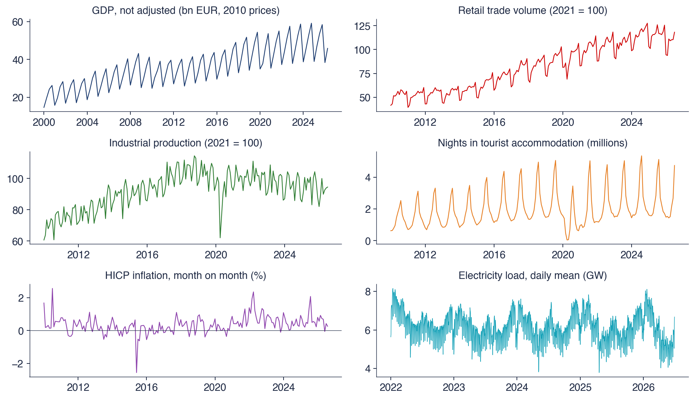
Six seasonal series from Romania: unadjusted quarterly real GDP (bn EUR, 2010 prices), retail trade volume and industrial production (indices, 2021 = 100), nights spent in tourist accommodation (millions), monthly HICP inflation (%) and the daily mean electricity load (GW).
What you will be able to do
Test for seasonal unit roots with the HEGY, Canova–Hansen and OCSB tests and choose the order of seasonal differencing.
Derive the autocorrelations and forecasts of a SARIMA model, in particular of the airline model.
Estimate and diagnose a SARIMA model and a regression with SARIMA errors and calendar effects.
Model multiple seasonality with Fourier terms, MSTL, dynamic harmonic regression, TBATS and Prophet.
Compare forecasts by time-series cross-validation, MASE and the Diebold–Mariano test, and combine them.
Chapter plan
Seasonality in economic dataDefinition and sources of seasonality, six Romanian series, the seasonal plot and the subseries plot.
Seasonal differencing and seasonal unit rootsThe operator \(\Delta_s\), deterministic and stochastic seasonality, the roots on the unit circle and the HEGY, Canova–Hansen and OCSB tests.
SARIMA modelsThe multiplicative model, the airline model, identification from the ACF and PACF, estimation and forecasting.
SummaryThe key ideas and formulas and self-assessment questions.
Seasonality in economic data
The first section defines seasonality and separates it from the business cycle. It shows, on six Romanian series, how large the seasonal component is and how different its sources are: weather, the calendar and institutions. Two specialised charts, the seasonal plot and the subseries plot, show whether the pattern is stable from one year to the next. The answer to this question decides the tool used in the next section: dummy variables for a stable pattern or seasonal differences for a pattern that drifts.
Seasonality is a pattern that repeats with a fixed period \(s\) known in advance, measured as the number of observations in one full cycle. For quarterly data \(s = 4\), for monthly data \(s = 12\), for daily data with a weekly pattern \(s = 7\), and for hourly data \(s = 24\) (the day) and \(s = 168\) (the week). The business cycle is different: it also has expansions and contractions, but their length is irregular and not known in advance. For this reason seasonality can be forecast far more reliably than the cycle.
The sources of seasonality are of three kinds. Weather produces heating demand in winter, the peak of seaside tourism in August and the timing of harvests. The calendar produces differences between months through the number of working days and public holidays; moving holidays, such as Orthodox Easter, fall in different months from year to year and shift activity between March, April and May. Institutions and customs add the school year, tax deadlines, year-end bonuses and the rhythm of the working week.
Seasonality can be additive, \(y_t = T_t + S_t + R_t\), when the amplitude of the pattern does not depend on the level of the series, or multiplicative, \(y_t = T_tS_tR_t\), when the pattern is a fixed proportion of the level; \(T_t\) is the trend, \(S_t\) the seasonal component and \(R_t\) the remainder. Taking logarithms turns the multiplicative form into an additive one, \(\ln y_t = \ln T_t + \ln S_t + \ln R_t\). For this reason, in this chapter series whose seasonal amplitude grows with the level are modelled in logarithms, as in Chapter 0.
In brief
Seasonality: a pattern that repeats with a fixed, known period\(s\) (observations per cycle)
\(s = 4\) (quarters), \(s = 12\) (months), \(s = 7\) (days in a week), \(s = 24\) and \(s = 168\) (hours in a day and in a week)
unlike a cycle, whose length is irregular and unknown (Chapter 0)
Sources
weather: heating in winter, the beach in August, harvests
the calendar: working days, public holidays, moving holidays such as Orthodox Easter
institutions and habits: the school year, tax deadlines, end-of-year bonuses, the working week
Additive (\(y_t = T_t + S_t + R_t\)) or multiplicative (\(y_t = T_tS_tR_t\), additive after logs): Chapter 0; here we work with logs when the swings grow with the level
The chart brings together six series with different frequencies and sources of seasonality. Unadjusted real GDP is quarterly, from 2000 to the second quarter of 2026, in billion euro at 2010 prices. Retail trade, industrial production, tourist nights and monthly inflation measured by the harmonised index of consumer prices (HICP) are monthly Eurostat series from 2010. Electricity load is a daily series, the mean of the hourly load reported by ENTSO-E, from 2022 to June 2026.
Each panel is read separately. In GDP, the saw teeth are the quarterly pattern: every year starts with a low in the first quarter and rises to the fourth. In tourism, the summer peaks dominate the series, and 2020 shows up as a collapse. Retail trade and industrial production have a less visible monthly pattern on top of the trend, and in industrial production the drop of April 2020 is the largest deviation. Monthly inflation fluctuates around a positive mean, with no trend. Electricity load has dense oscillations from week to week and annual waves, with peaks in winter.
In brief
Eurostat: GDP (quarterly, not adjusted), retail trade, industrial production, tourism nights, HICP; ENTSO-E: daily electricity load
For GDP, the mean of the fourth quarter is 57% above the mean of the first quarter over 2000–2026. The quarterly means are 27.8 billion euro in the first quarter, 33.6 in the second, 39.5 in the third and 43.6 in the fourth, at 2010 prices. The rise in the second and third quarters largely reflects construction and agriculture. The amplitude of the pattern grows with the level of the series, so the seasonality is multiplicative and GDP is modelled in logarithms.
In tourism, the number of nights in August is 3.7 times that in January, on average over 2015–2019. The restrictions of 2020 (lockdown) interrupted this pattern, and a series with such a break needs dummy variables for the outliers. Monthly inflation also has a seasonal pattern: between 2010 and 2019 it was on average negative in June, −0.37%, because of fresh food prices, and 0.49% in October.
Electricity has two patterns at once: the dense oscillation in the chart is the weekly cycle, and the winter peaks form the annual cycle. A series with several seasonal periods has multiple seasonality, and the tools for it are the subject of section 8.
In brief
GDP: the mean of Q4 is 57% above the mean of Q1 (2000–2026); the swing grows with the level: multiplicative, take logs
quarter means (bn EUR, 2010 prices): 27.8, 33.6, 39.5, 43.6: construction and agriculture in Q2–Q3
Tourism: August has 3.7 times the nights of January (2015–2019); the 2020 lockdown breaks the pattern
HICP: monthly inflation is lower in June (\(-\)0.37% on average, 2010–2019, fresh food) and higher in October (0.49%)
Electricity: two patterns at once, the week (dense oscillation) and the year (winter peaks): multiple seasonality, Section 8
The seasonal plot, on the left, draws each year as a separate line, with the months on the horizontal axis. If the lines have the same shape, the pattern is stable; if the shape changes, the pattern evolves over time. For tourist nights, the 14 lines from 2012 to 2025 have the same shape: a low in winter and a peak in August. The year 2020, the dashed red line, is the only exception.
The subseries plot, on the right, splits the series by season: each quarter of GDP is followed across the years as its own line, and the horizontal line shows its mean. The vertical axis is GDP in billion euro, from 2005 to 2026. The distance between the means of the four quarters measures the size of the seasonal effect, and the evolution of each line shows whether the seasonal effect changes over time.
In brief
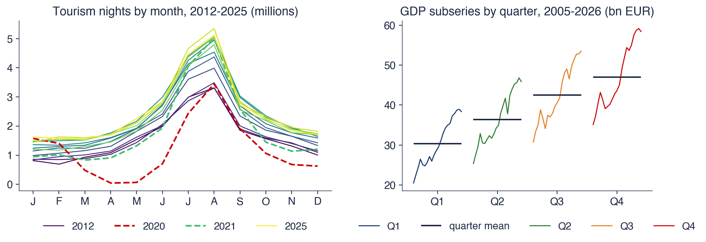
Left: one line per year (seasonal plot); right: each quarter of GDP followed over the years, with its mean (subseries plot)
In 2019, tourist nights were 5.06 million in August and 1.47 million in January. In April 2020 they were only 0.045 million, against 1.76 million in April 2019. This drop is an outlier produced by a one-off event, not a new seasonal pattern: after 2021 the lines return to their earlier shape. A seasonal model must treat such months separately, for example with a dummy variable, otherwise they distort the estimate of the pattern.
In the subseries plot, the four quarters of GDP rise in parallel. The seasonal pattern is therefore stable, on top of a common trend. If the lines converged, diverged or crossed, the ranking of the quarters would change over time; this is the signature of stochastic seasonality, covered in the next section. The chart is not a test, but it shows which hypothesis is plausible before the formal tests.
In brief
Tourism: one shape every year, a summer peak and a winter trough
2019: 5.06 million nights in August, 1.47 million in January
April 2020: 0.045 million (1.76 million in April 2019): an outlier, not a new season
GDP subseries: all four quarters rise in parallel
a stable seasonal shape on top of a common trend
if the lines crossed, the seasonal pattern would be changing: stochastic seasonality (next section)
Seasonality has a known period and the business cycle does not; hence the difference between them for forecasting. Weather, the calendar and institutions produce seasonal patterns, and moving holidays shift part of the activity from one month to another. All six Romanian series are seasonal, and electricity load has several periods at once. The seasonal plot and the subseries plot show whether the pattern is stable, which guides the choice between deterministic modelling and seasonal differencing.
In brief
Seasonality repeats with a known period \(s\); a cycle does not
Weather, the calendar and institutions create it; moving holidays shift it between months
Romanian GDP, tourism, inflation and electricity load are all seasonal; electricity has several periods at once
Seasonal and subseries plots show whether the pattern is stable
Section summary
Seasonality is the largest source of variation in Romanian economic series: the mean of GDP in the fourth quarter is 57% above that of the first, and tourism in August is 3.7 times that in January. The pattern is multiplicative for GDP and tourism, so these series are modelled in logarithms. The charts show largely stable patterns, broken by outliers such as 2020. The next section formalises the distinction between a stable pattern and one that drifts and gives the tests that decide between them.
Seasonal differencing and seasonal unit roots
In Chapter 3, the regular difference \(\Delta = 1 - L\) removed one unit root, that is, a stochastic trend. This section extends the idea to the seasonal lag. The seasonal difference \(\Delta_s = 1 - L^s\) has \(s\) unit roots (seasonal unit roots), one for each seasonal frequency, and a series may have only some of them. The section defines the operator, distinguishes deterministic from stochastic seasonality, explains the roots on the unit circle and presents three tests, then applied to Romanian data.
where \(L\) is the lag operator, \(L^s y_t = y_{t-s}\). For a quarterly series in logarithms, \(100\,\Delta_4 \ln Y_t\) is the growth over the same quarter of the previous year, in per cent: the annual growth rate published by statistical offices.
The effect of \(\Delta_s\) shows on a series with a fixed seasonal pattern and a linear trend, \(y_t = a + bt + S_t + \varepsilon_t\), where \(a\) is the intercept, \(b\) the slope of the trend and \(S_t = S_{t-s}\) the seasonal effect of period \(t\). Because the pattern repeats exactly, it disappears under differencing:
The seasonal difference removes the pattern and turns the linear trend into a constant, \(bs\). The price is the term \(\varepsilon_t - \varepsilon_{t-s}\): a seasonal MA with coefficient \(-1\), whose root lies on the unit circle. Such a process is non-invertible, and the situation is seasonal over-differencing, the seasonal analogue of over-differencing in Chapter 3.
When the trend is also stochastic, the series needs both differences: \(\Delta\Delta_s = (1 - L)(1 - L^s) = 1 - L - L^s + L^{s+1}\). Polynomials in \(L\) commute, so the order in which the two differences are applied does not change the result.
In the model with deterministic seasonality, the mean of the series depends only on the season: \(y_t = \sum_{j=1}^{s}\gamma_jD_{jt} + u_t\), where \(D_{jt}\) is 1 if period \(t\) falls in season \(j\) and 0 otherwise, and \(u_t\) is stationary. The seasonal means \(\gamma_j\) are constant over the whole sample, so January always stays the same distance below July. The appropriate tool is a regression on seasonal dummy variables or on Fourier terms, covered in section 7.
The basic model of stochastic seasonality is the seasonal random walk, \(y_t = y_{t-s} + \varepsilon_t\). Each season evolves as its own random walk: the January values form one random walk, the February values another, and the observed series interleaves all \(s\) of them. The variance of \(y_t\) grows without bound with the number of years, and the differences between seasons accumulate: after long enough, a peak season can become a trough season, that is, "summer can become winter". The appropriate tool is the seasonal difference \(\Delta_s\), which turns the seasonal random walk into white noise.
The choice between the two models has consequences in both directions. Differencing a series with a deterministic pattern produces a non-invertible MA, as in (4.2), and forecasts with needlessly wide intervals. Modelling a series with a stochastic pattern by dummy variables leaves a seasonal unit root in the residuals, and inference based on them is no longer valid. The tests on the following slides decide between the two hypotheses.
In brief
Deterministic: \(y_t = \sum_{j=1}^{s}\gamma_jD_{jt} + u_t\), with \(D_{jt} = 1\) in season \(j\) and \(u_t\) stationary
the seasonal means \(\gamma_j\) never change; the right tool: seasonal dummies or Fourier terms (Section 7)
Stochastic: the seasonal random walk\(y_t = y_{t-s} + \varepsilon_t\)
each season is its own random walk: \(s\) separate walks interleaved
\(\mathrm{Var}(y_t)\) grows without bound; the pattern drifts, and “summer can become winter”
the right tool: the seasonal difference \(\Delta_s\)
The choice matters: differencing a deterministic pattern over-differences; modelling a stochastic one with dummies leaves a unit root in the residuals
The unit roots of the operator \(\Delta_s\) are the solutions of \(1 - z^s = 0\), that is, the \(s\)-th roots of unity, \(z_k = e^{2\pi i k/s}\),\(k = 0, \dots, s-1\). All have modulus 1 and are equally spaced on the unit circle. For quarterly data, the polynomial factors as \(1 - z^4 = (1 - z)(1 + z)(1 + z^2)\), with roots \(1\),\(-1\) and \(\pm i\).
The chart shows these roots in the complex plane: the horizontal axis is the real part, the vertical axis the imaginary part. On the left, the four roots of \(1 - z^4\); on the right, the 12 roots of \(1 - z^{12}\), for monthly data. The green circle marks the root \(z = 1\), of frequency zero, which corresponds to the trend; the orange square marks the root \(z = -1\), of frequency 1/2, which corresponds to a cycle of two periods. The other roots form complex conjugate pairs, each pair corresponding to one seasonal frequency.
In brief
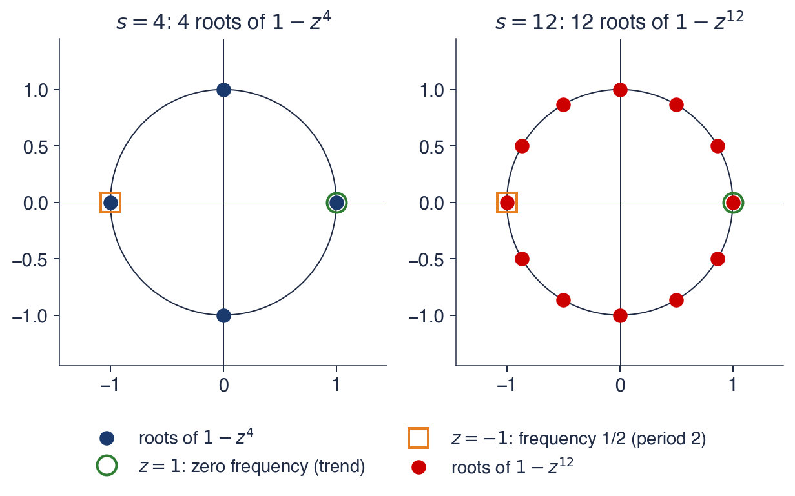
\(1 - z^4 = (1 - z)(1 + z)(1 + z^2)\): roots \(1\), \(-1\), \(\pm i\), all on the unit circle
The difference \(\Delta_s\) imposes \(s\) unit roots at once, one for each frequency of \(k/s\) cycles per period, \(k = 0, \dots, s-1\). In the quarterly case, the root \(z = 1\) has frequency 0 and corresponds to the stochastic trend; the root \(z = -1\) corresponds to half a cycle per quarter, that is, a cycle with a period of two quarters; the pair \(z = \pm i\) corresponds to a quarter of a cycle per quarter, that is, the annual cycle of four quarters.
A series may have some of these roots and not the others. For example, a series may have a stochastic trend (the root 1) and a stable annual pattern (no roots \(\pm i\)). Applying \(\Delta_4\) to such a series over-differences at the frequencies where the series has no unit roots. Seasonal unit-root tests ask, frequency by frequency, which roots are present; the first and best known is the HEGY test.
In brief
\(\Delta_s\) imposes \(s\) unit roots at once, one for each frequency\(k/s\), \(k = 0, \dots, s - 1\)
quarterly: \(z = 1\) (frequency 0, the trend), \(z = -1\) (half a cycle per quarter: period 2 quarters), \(z = \pm i\) (period 4 quarters: the annual cycle)
A series may have some of these roots and not others: then \(\Delta_4\) over-differences at the frequencies it does not need
Seasonal unit-root tests ask, frequency by frequency, which roots are present: the HEGY test (next slides)
The chart applies three transformations to the logarithm of unadjusted real GDP, over 106 quarters up to the second quarter of 2026. The top row shows the transformed series, in per cent: the growth over the previous quarter, \(100\,\Delta\ln Y_t\); the growth over the same quarter of the previous year, \(100\,\Delta_4\ln Y_t\); and the double difference \(100\,\Delta\Delta_4\ln Y_t\). The bottom row shows the sample autocorrelation function (ACF) of each series, up to lag 16.
In the ACF panels, the dashed red lines are the band \(\pm 1.96/\sqrt{T}\): a sample autocorrelation outside the band is significantly different from zero at 5% under the white-noise hypothesis. The dotted vertical lines mark the seasonal lags 4, 8, 12 and 16. A well-differenced series has small autocorrelations at these lags, and large, persistent values at the seasonal lags show that the seasonality has not been removed.
In brief
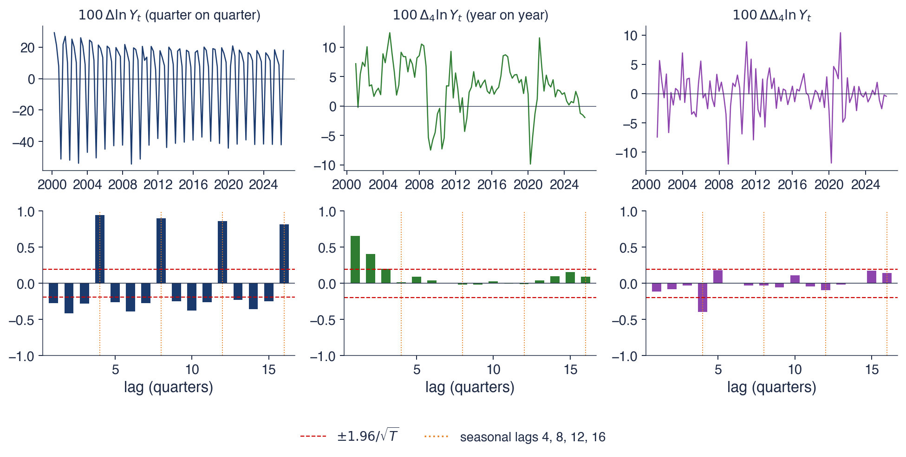
\(\ln\) of real GDP, not adjusted, 106 quarters to 2026Q2; top: three transformations; bottom: their sample ACF up to 16 quarters
The first difference \(\Delta\ln Y\) is dominated by the season: the ACF is 0.95 at lag 4 and 0.90 at lag 8 and decays very slowly at lags 12 and 16. The standard deviation of the series is 26.5%, almost entirely seasonal variation. This is the seasonal analogue of the slow ACF decay of a random walk in Chapter 3: the regular difference does not remove the seasonal unit roots.
The seasonal difference \(\Delta_4\ln Y\), annual growth, has a standard deviation of 4.4%. Its ACF is 0.66 at lag 1 and then falls gradually, to 0.01 at lag 4. The seasonal pattern has gone, and what remains is the persistence of the business cycle: an AR-type geometric decay over the first lags.
The double difference \(\Delta\Delta_4\ln Y\) has an ACF of −0.11 at lag 1 and −0.40 at lag 4, and the significance band is \(\pm 0.20\). The only significant value is the negative one at the seasonal lag. This is the signature of a seasonal MA(1), and together with the double differencing it points to the airline model of section 3. Whether the seasonal difference is justified remains to be decided; the following tests answer that question.
In brief
\(\Delta\ln Y\): dominated by the season: ACF \(0.95\) at lag 4 and \(0.90\) at lag 8, decaying very slowly; sd 26.5%
the seasonal analogue of the slow ACF decay of a random walk (Chapter 3)
\(\Delta_4\ln Y\) (year-on-year growth): sd 4.4%; ACF \(0.66\) at lag 1, \(0.01\) at lag 4: an AR-type pattern
\(\Delta\Delta_4\ln Y\): ACF \(\ensuremath{-}0.11\) at lag 1 and \(\ensuremath{-}0.40\) at lag 4 (band \(\pm 0.20\))
one negative spike at the seasonal lag: a seasonal MA(1), the signature of the airline model (Section 3)
The test of Hylleberg, Engle, Granger and Yoo (1990) (HEGY) tests each seasonal unit root of a quarterly series in a single regression. The series is passed through three filters, each built to keep one frequency and remove the other roots: \(y_{1t} = (1 + L + L^2 + L^3)y_t\) keeps frequency zero, \(y_{2t} = -(1 - L + L^2 - L^3)y_t\) keeps the two-quarter frequency, and \(y_{3t} = -(1 - L^2)y_t\) keeps the annual frequency. The test regression is
Each coefficient \(\pi_k\) corresponds to a frequency. The null hypothesis \(\pi_1 = 0\) means a unit root at \(z = 1\) and is tested with the \(t\) statistic of \(\pi_1\). The hypothesis \(\pi_2 = 0\) means a root at \(z = -1\), also with a \(t\) test. The pair of roots \(\pm i\) corresponds to the joint hypothesis \(\pi_3 = \pi_4 = 0\), tested with an \(F\) statistic. The deterministic terms (constant, seasonal dummies, trend) and the lags of \(\Delta_4 y_t\) play the same role as in the augmented Dickey–Fuller test: the former fix the alternative hypothesis, the latter remove autocorrelation from the errors.
Under the null hypothesis the statistics do not have the standard \(t\) and \(F\) distributions, just like the Dickey–Fuller statistic; critical values are taken from tables or obtained by simulation. The decision is read frequency by frequency. If all three null hypotheses are rejected, the series has no seasonal unit roots and needs no seasonal differencing. If none is rejected, all four roots of \(1 - z^4\) are plausible and \(\Delta_4\) is justified.
The test of Canova and Hansen (1995) reverses the hypotheses: the null hypothesis is stable, deterministic seasonality, and the alternative is a seasonal pattern that changes over time, that is, a seasonal unit root. It is the seasonal analogue of the KPSS test of Chapter 3. Rejection means that the seasonal pattern is not constant over the sample.
The test of Osborn, Chui, Smith and Birchenhall (1988) (OCSB) has a seasonal unit root as its null hypothesis. Its regression explains \(\Delta\Delta_s y_t\) by \(\Delta_s y_{t-1}\) and \(\Delta y_{t-s}\); if both coefficients are zero, the series needs both differences. The test is the default seasonal criterion of the `auto_arima` function of the Python package `pmdarima`, through the function `nsdiffs`, which chooses the number of seasonal differences.
As with the ADF and KPSS tests, tests with opposite null hypotheses answer different questions and are used together. If one test does not reject the unit root and the other does not reject stability, the data do not distinguish between the two hypotheses. The decision is then completed with information from the data: the seasonal plots, the ACF at lags \(s\),\(2s\) and \(3s\), and the size of the estimated seasonal MA coefficient \(\hat\Theta\) after differencing. A value of \(\hat\Theta\) close to \(-1\) shows that \(\Delta_s\) was applied to a series with a deterministic pattern, as in (4.2).
the seasonal analogue of KPSS (Chapter 3): rejecting means the pattern changes over time
OCSB (Osborn, Chui, Smith and Birchenhall (1988)): the null is a seasonal unit root; a regression of \(\Delta\Delta_s y_t\) on \(\Delta_s y_{t-1}\) and \(\Delta y_{t-s}\)
the default seasonal test of auto_arima in the Python package pmdarima (nsdiffs)
As in Chapter 3: tests with opposite nulls answer different questions; use them together
and look at the data: seasonal plots, the ACF at lags \(s, 2s, 3s\), and the size of \(\hat\Theta\) after \(\Delta_s\) (\(\hat\Theta \approx -1\) signals over-differencing)
The first table contains the HEGY test for the logarithm of GDP over 2000–2019, stopped before 2020 so that the pandemic outlier does not influence the test. The regression contains a constant, seasonal dummies and a trend, plus one lag of \(\Delta_4 y\) chosen by the Akaike criterion (AIC), with \(n = 75\) observations. The critical values come from 4,000 simulations of the process \(\Delta_4 y_t = \varepsilon_t\), which has all four unit roots. The statistic \(t(\pi_1)\) is −1.97, with a 5% critical value of −3.39; \(t(\pi_2)\) is −2.19, with critical value −2.77; and \(F(\pi_3, \pi_4)\) is 6.12, with critical value 6.64. None of the three null hypotheses is rejected, so the data are compatible with all the roots of \(1 - z^4\).
The second table gives, for five series in logarithms over 2005–2019, the number of seasonal differences \(D\) chosen by the OCSB test and by the Canova–Hansen test, and the number of regular differences \(d\) chosen by the KPSS test. For GDP, OCSB chooses \(D = 1\) and Canova–Hansen \(D = 0\). With 20 years of quarterly data both conclusions are plausible: the tests lack the power to distinguish a stable pattern from one that drifts slowly. The practical choice is \(\Delta_4\), and the size of \(\hat\Theta\) in the estimated model then shows how stable the pattern is (section 5).
For the four monthly series, both tests choose \(D = 0\), that is, a stable seasonal pattern that dummy variables or Fourier terms can describe. KPSS requires one regular difference for all series except the HICP in logarithms, which requires \(d = 2\). The price level therefore needs two differences: inflation itself, the first difference of log prices, is close to a unit root, as in Chapter 3.
In brief
HEGY, \(\ln\) GDP, 2000–2019
statistic
5% critical value
decision
\(t(\pi_1)\), root \(1\)
\(\ensuremath{-}1.97\)
\(\ensuremath{-}3.39\)
not rejected
\(t(\pi_2)\), root \(-1\)
\(\ensuremath{-}2.19\)
\(\ensuremath{-}2.77\)
not rejected
\(F(\pi_3, \pi_4)\), roots \(\pm i\)
\(6.12\)
\(6.64\)
not rejected
Series (logs, 2005–2019)
\(D\) by OCSB
\(D\) by Canova–Hansen
\(d\) by KPSS
GDP (quarterly)
1
0
1
Retail trade
0
0
1
Industrial production
0
0
1
Tourism nights
0
0
1
HICP
0
0
2
HEGY: constant, seasonal dummies and trend, 1 lag of \(\Delta_4y\) (AIC), \(n = 75\); critical values from 4 000 simulations of \(\Delta_4y_t = \varepsilon_t\)
Interpretation: for GDP, HEGY and OCSB support \(\Delta_4\) while Canova–Hansen does not reject a stable pattern; with 20 years of quarters both views fit, so we use \(\Delta_4\) and let \(\hat\Theta\) say how stable the pattern is (Section 5)
Monthly series: both tests choose \(D = 0\), a stable pattern; HICP needs \(d = 2\) in logs: inflation itself is close to a unit root (Chapter 3)
Recap: Seasonal differencing and seasonal unit roots
The operator \(\Delta_s = 1 - L^s\) has \(s\) unit roots on the unit circle, one for each seasonal frequency. A deterministic pattern is modelled with dummy variables or Fourier terms and a stochastic one with \(\Delta_s\); the wrong choice leads either to over-differencing or to a unit root left in the residuals. HEGY and OCSB have the seasonal unit root as their null hypothesis, and Canova–Hansen a stable pattern. For Romanian GDP, \(\Delta\Delta_4\ln Y\) leaves a single significant autocorrelation, at lag 4: a seasonal MA.
In brief
\(\Delta_s = 1 - L^s\) has \(s\) unit roots on the circle, one per seasonal frequency
Deterministic seasonality: dummies or Fourier terms; stochastic seasonality: \(\Delta_s\)
HEGY and OCSB test for seasonal unit roots; Canova–Hansen tests for a stable pattern
Romanian GDP: \(\Delta\Delta_4\ln Y\) leaves one spike at lag 4, a seasonal MA
Section summary
Seasonal differencing removes all the roots on the unit circle at once, even those the series does not have. This is why the choice of \(D\) relies on frequency-by-frequency tests and on tests with opposite null hypotheses. For Romanian GDP, HEGY and OCSB do not reject the seasonal unit roots, and Canova–Hansen does not reject stability. The difference \(\Delta\Delta_4\) is the practical choice, and the resulting series has the structure of a seasonal MA(1). The next section builds the model that describes this structure.
SARIMA models
The SARIMA model extends the ARIMA model of Chapter 3 with polynomials in the seasonal operator \(L^s\). The section writes the multiplicative form of the model, derives the autocorrelations of the airline model, gives the identification rules from the ACF and PACF, and then covers estimation, model choice with information criteria and forecasting. All the results are those of Chapters 2 and 3, applied also at multiples of the period \(s\).
The regular polynomials \(\phi(L)\), of order \(p\), and \(\theta(L)\), of order \(q\), are those of Chapter 2. The seasonal polynomials are polynomials in \(L^s\):\(\Phi(L^s) = 1 - \Phi_1L^s - \dots - \Phi_PL^{Ps}\), of order \(P\), and \(\Theta(L^s) = 1 + \Theta_1L^s + \dots + \Theta_QL^{Qs}\), of order \(Q\). The numbers \(d\) and \(D\) are the numbers of regular and seasonal differences, usually 0 or 1, and \(c\) is a constant.
The product form has a justification given by Box, Jenkins and Reinsel (2008). In a monthly series, January depends on December, the previous observation, and on January of the previous year, the observation in the same season. The data can be arranged in a two-way table, with months in columns and years in rows: the seasonal part models the link along the columns, from one year to the next, and the regular part the link along the rows, from one month to the next. The product of the two polynomials combines the two directions with few parameters.
The stationarity and invertibility conditions are those of Chapter 2, applied to the product. The AR part is stationary if all the roots of \(\phi(z)\Phi(z^s)\) lie outside the unit circle, and the MA part is invertible if all the roots of \(\theta(z)\Theta(z^s)\) lie outside it. For a seasonal AR(1), \(1 - \Phi z^s = 0\) has \(s\) roots with modulus \(|\Phi|^{-1/s}\), so the condition is \(|\Phi| < 1\).
\(d\), \(D\): numbers of regular and seasonal differences, usually 0 or 1
Why multiply? Box, Jenkins and Reinsel (2008): in a monthly series, January depends on December (the regular part) and on last January (the seasonal part)
a two-way table: months in the columns, years in the rows; one model along each direction
Stationarity: the roots of \(\phi(z)\Phi(z^s)\) outside the unit circle; invertibility: the roots of \(\theta(z)\Theta(z^s)\) outside; for a seasonal AR(1) this means \(|\Phi| < 1\)
The airline model is SARIMA\((0,1,1)(0,1,1)_{12}\). With \(\theta = -0.4\) and \(\Theta = -0.6\) it is written \((1 - L)(1 - L^{12})y_t = (1 - 0.4L)(1 - 0.6L^{12})\varepsilon_t\). Expanding both products gives the equation
The coefficient of \(\varepsilon_{t-13}\) is the product \(\theta\Theta = 0.24\), not a new parameter: the model has two MA parameters and the variance \(\sigma^2\). A general MA(13) would have 13 coefficients; the multiplicative structure reduces them to two.
The differenced series \(w_t = \Delta\Delta_{12}y_t\) is an MA(13) with only four non-zero weights, at lags 0, 1, 12 and 13. Its autocovariances are computed as in Chapter 2, from the products of the weights. The variance is \(\gamma(0) = \sigma^2(1 + \theta^2)(1 + \Theta^2) = 1.5776\,\sigma^2\), and the non-zero autocorrelations are
All other autocorrelations are zero. The values at lags 1 and 12 are those of a regular MA(1) and of a seasonal MA(1) taken separately, and the values at lags 11 and 13 appear only because the two polynomials are multiplied.
The chart shows the theoretical ACF (top row) and partial autocorrelation function (PACF, bottom row) of three monthly models. The horizontal axis is the lag, in months, up to 40; the dotted vertical lines mark the seasonal lags 12, 24 and 36. The first column is a seasonal AR(1) with \(\Phi = 0.8\), the second a seasonal MA(1) with \(\Theta = -0.6\), and the third the airline model with \(\theta = -0.4\) and \(\Theta = -0.6\).
For the airline model, the chart shows the stationary part \(w_t = \Delta\Delta_{12}y_t\), the only one for which the ACF and PACF are defined. The three models are the reference models for identification: the correlograms of real differenced series are compared with these shapes.
In brief
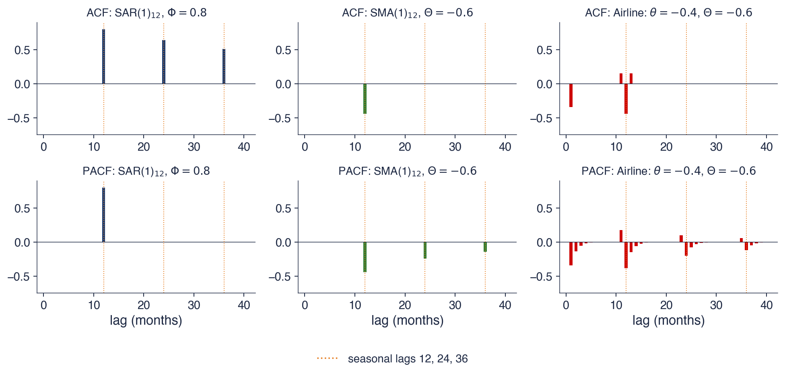
Monthly, \(s = 12\); the airline panel is the stationary part \(w_t = \Delta\Delta_{12}y_t\)
For the seasonal AR(1), the ACF is non-zero only at multiples of 12 and decays geometrically: 0.8 at lag 12, 0.64 at lag 24 and 0.512 at lag 36, that is, \(\Phi\),\(\Phi^2\) and \(\Phi^3\). The PACF has a single non-zero value, at lag 12. This is the AR(1) rule of Chapter 2, read only at multiples of \(s\).
For the seasonal MA(1), the rule is reversed. The ACF has a single non-zero value, \(\Theta/(1 + \Theta^2) = -0.441\) at lag 12, and is zero after that lag. The PACF decays in absolute value at lags 12, 24 and 36; at lag 24 it is −0.242.
The airline model has non-zero ACF values at lag 1, −0.345, and at lag 12, −0.441, plus two "satellites" at lags 11 and 13, each equal to 0.152. The satellites are the product \(\rho_1\rho_{12}\) of (4.6) and are the fingerprint of the multiplicative structure: an additive model, with MA terms only at lags 1 and 12, would not produce them. The PACF of the airline model decays both at the first lags and around each multiple of 12, which points to MA terms, not AR terms.
In brief
Seasonal AR(1): the ACF decays geometrically at lags 12, 24, 36 (\(0.8\), \(0.64\), \(0.512\)); the PACF has one spike at lag 12
the AR rule of Chapter 2, read only at multiples of \(s\)
Seasonal MA(1): the ACF cuts off after lag 12; the PACF decays at 12, 24, 36 (\(-\)0.242 at lag 24)
Airline: spikes at 1 (\(-\)0.345) and 12 (\(-\)0.441), with “satellites” at 11 and 13 (0.152)
the satellites are the product \(\rho_1\rho_{12}\): the fingerprint of the multiplicative structure
The table summarises the identification rules for the differenced series. The seasonal part is read only at lags \(s, 2s, 3s, \dots\): a seasonal AR(\(P\)) has an ACF that decays at these lags and a PACF that cuts off after lag \(Ps\), and a seasonal MA(\(Q\)) has an ACF that cuts off after lag \(Qs\) and a PACF that decays. The regular part is read at the first lags, with the rules of Chapter 2. The product of the two parts adds satellites at lags \(ks \pm j\), where \(j\) depends on the order of the regular part.
The procedure has four steps. The first stabilises the variance, by logarithms or a Box–Cox transformation (Box and Cox, 1964), when the seasonal amplitude grows with the level. The second chooses \(D\) first, from the seasonal plot and the HEGY or OCSB tests, then \(d\), with the tests of Chapter 3; the order matters, because a seasonal difference also removes the root at frequency zero. The third reads \(P\) and \(Q\) at the seasonal lags and \(p\) and \(q\) at the first lags. The fourth keeps the orders small: in practice, \(P \le 1\) and \(Q \le 1\) are almost always enough, because a monthly series has relatively few complete annual cycles from which to estimate more seasonal parameters.
The parameters are estimated by maximum likelihood for the differenced series, written in state-space form; in Python, the class `SARIMAX` of `statsmodels`. The difference \(\Delta\Delta_s\) uses up the first \(s + 1\) observations. The constant \(c\) is omitted when \(d + D \ge 2\): in the original series it would correspond to a quadratic trend, rarely plausible for economic data.
Candidate models are compared with the small-sample corrected Akaike criterion and with the Bayesian criterion (BIC):
where \(k\) is the number of estimated parameters and \(n\) the number of observations after differencing. The criteria are compared only between models with the same \(d\) and \(D\). Differencing changes the data on which the likelihood is computed, and likelihood values for two different series are not comparable.
The automatic procedure of Hyndman and Khandakar (2008) first chooses \(d\) and \(D\) by tests, then searches stepwise for the orders \((p, q, P, Q)\) that minimise AICc. In Python it is available as `pmdarima.auto_arima(y, m=12)`. Its result is a starting point: the residuals of the chosen model must be checked, and its forecasts must be compared with a simple benchmark.
Diagnostics use the Ljung–Box test (Ljung and Box, 1978) on the residuals, with a number of lags \(m\) that exceeds the period, for example \(m = 2s\), so that the test covers the seasonal lags. The statistic has \(m - p - q - P - Q\) degrees of freedom, because each estimated ARMA parameter uses up one degree of freedom.
In brief
Maximum likelihood of the differenced series (state-space form, statsmodelsSARIMAX)
\(s + 1\) observations are lost to \(\Delta\Delta_s\); the constant is dropped when \(d + D \ge 2\) (it would mean a quadratic trend)
Information criteria: AICc \(=\) AIC \(+ \frac{2k(k + 1)}{n - k - 1}\) and BIC, compared only across models with the same \(d\) and \(D\)
\(k\): the number of estimated parameters; \(n\): the number of observations after differencing
differencing changes the data on which the likelihood is computed
Automatic SARIMA: a stepwise search over \((p, q, P, Q)\) by AICc after choosing \(d\) and \(D\) by tests (Hyndman and Khandakar (2008))
in Python: pmdarima.auto_arima(y, m=12); always check the residuals and compare with a benchmark
Diagnostics: Ljung–Box with lags beyond \(s\) (e.g. \(m = 2s\)) and \(m - p - q - P - Q\) degrees of freedom (Ljung and Box (1978))
Forecasts are computed as for the ARIMA models of Chapter 3. The model is written as an equation for \(y_t\), and at horizon \(h\) future shocks are replaced by their mean, zero, future values of the series by their forecasts, and past shocks by the estimated residuals. For the airline model, (4.5) gives \(\hat y_{T+h} = \hat y_{T+h-1} + \hat y_{T+h-s} - \hat y_{T+h-s-1}\) plus the MA terms, which contribute only while \(h \le s + 1\), that is, as long as the shocks in the equation are still observed.
Beyond horizon \(s + 1\), the forecasts follow the homogeneous equation \((1 - L)(1 - L^s)\hat y_{T+h} = 0\). Its solution is the eventual forecast function: a straight line, which comes from the double root \(z = 1\), plus a fixed seasonal pattern, which comes from the other \(s - 1\) roots of \(1 - z^s\). The pattern is not that of the last year but an exponentially weighted average of the patterns of past years, with weight \(1 + \Theta\) on the most recent year. When \(\Theta \to -1\), the weight of the recent year tends to zero and the pattern becomes fixed, that is, deterministic. When \(\Theta = 0\), the pattern is last year's repeated, as in the seasonal naive method.
Forecast intervals widen with the horizon, because the model has two unit roots at frequency zero. When the model is estimated for \(\ln y\),\(\exp(\hat y_{T+h})\) is the median of the forecast for \(y\), not its mean. If the forecast error for \(\ln y\) follows the Normal distribution with variance \(\sigma_h^2\), the mean of the forecast is \(\exp(\hat y_{T+h} + \sigma_h^2/2)\), slightly larger than the median, and the difference grows with the horizon.
In brief
As for ARIMA (Chapter 3): write the model as an equation for \(y_t\); replace future shocks by 0, future values by their forecasts, past shocks by residuals
airline: \(\hat y_{T+h} = \hat y_{T+h-1} + \hat y_{T+h-s} - \hat y_{T+h-s-1} + (\text{MA terms while } h \le s + 1)\)
Eventual forecast function of the airline model: a fixed seasonal pattern on a straight line
the pattern is an exponentially weighted average of past patterns, with weight \(1 + \Theta\) on the most recent year
\(\Theta \to -1\): a fixed (deterministic) pattern; \(\Theta = 0\): last year's pattern repeated (seasonal naive)
Intervals widen with \(h\) (two unit roots); for \(\ln y\), \(\exp(\hat y_{T+h})\) is the forecast median
the mean is \(\exp(\hat y_{T+h} + \sigma_h^2/2)\), slightly higher; \(\sigma_h^2\): the forecast error variance at horizon \(h\)
The example uses the quarterly model SARIMA\((0,0,0)(0,1,1)_4\),\(y_t = y_{t-4} + \varepsilon_t + \Theta\varepsilon_{t-4}\), with \(\Theta = -0.6\). The last four observations are \(y_{T-3}, \dots, y_T = 100;\ 120;\ 130;\ 140\), and the corresponding residuals are \(\hat\varepsilon_{T-3}, \dots, \hat\varepsilon_T = 2;\ -1;\ 0;\ 3\).
The forecast for the first future quarter uses the observation in the same quarter of the previous year and its residual: \(\hat y_{T+1} = y_{T-3} + \Theta\hat\varepsilon_{T-3} = 100 - 0.6 \cdot 2 = 98.8\). Likewise, \(\hat y_{T+2} = 120 - 0.6 \cdot (-1) = 120.6\),\(\hat y_{T+3} = 130.0\) and \(\hat y_{T+4} = 140 - 0.6 \cdot 3 = 138.2\). For \(h = 5\), the shock \(\varepsilon_{T+1}\) is not observed and is replaced by zero, so \(\hat y_{T+5} = \hat y_{T+1} = 98.8\): after one year the MA term drops out and the forecast pattern repeats.
The example shows how the coefficient \(\Theta\) works. A large positive surprise in the last quarter, \(\hat\varepsilon_T = 3\), lowers the forecast for the same quarter of the next year by \(0.6 \cdot 3 = 1.8\) relative to the observed value. The model therefore treats the surprise as partly transitory: only the fraction \(1 + \Theta = 0.4\) of it passes into the seasonal pattern of the forecast.
The SARIMA model multiplies regular and seasonal polynomials, as in (4.4), which describes dependence from one period to the next and from one year to the next with few parameters. Identification uses the rules of Chapter 2 at lags \(s, 2s, \dots\) and the satellites at lags \(ks \pm j\). AICc is compared only between models with the same \(d\) and \(D\), and the Ljung–Box test is applied over more lags than \(s\). The eventual forecast of the airline model is a seasonal pattern on a straight line, updated with weight \(1 + \Theta\).
In brief
SARIMA multiplies regular and seasonal polynomials: \(\phi(L)\Phi(L^s)\Delta^d\Delta_s^Dy_t = \theta(L)\Theta(L^s)\varepsilon_t\)
Identification: the Chapter 2 rules at lags \(s, 2s, \dots\), plus satellites at \(ks \pm j\)
Compare AICc only for the same \(d\) and \(D\); check Ljung–Box beyond lag \(s\)
The airline forecast: a seasonal pattern on a line, updated with weight \(1 + \Theta\)
Section summary
The SARIMA model describes dependence in two directions: from one period to the next and from one year to the next. The airline model has only two parameters, and its autocorrelations, (4.6), have values at lags 1 and \(s\) and satellites at \(s \pm 1\). The coefficient \(\Theta\) controls how fast the seasonal pattern is updated in the forecast: at \(-1\) the pattern is fixed, at zero it repeats the last year. The next two sections apply this model to the classic airline passenger series and to Romanian GDP.
Case study: the airline model
The monthly series of international passengers in 1949–1960 is the classic example of Box, Jenkins and Reinsel (2008) and gave the airline model its name. The case study goes through all the steps of the previous section on this series: the log transformation, double differencing, identification from the correlograms, estimation and a two-year out-of-sample forecast, compared with the seasonal naive method.
Box, Jenkins and Reinsel (2008), whose first edition appeared in 1970, modelled the monthly totals of international airline passengers over 1949–1960, that is, 144 months. The series has two features: sustained growth, from the expansion of air travel with jet aircraft, and a summer peak whose size grows with the level of the series. The model they chose, SARIMA\((0,1,1)(0,1,1)_{12}\) for \(\ln y_t\), has since been called the "airline model".
The model has remained in use for two reasons. The first is that two parameters describe many seasonal series in trade, production, retail sales and energy well: any series with a trend and a slowly evolving seasonal pattern has the same structure. The second is that the airline model is the default model of the regARIMA stage in seasonal adjustment programs such as X-13ARIMA-SEATS, covered in section 6.
In brief
Box, Jenkins and Reinsel (2008) (first edition 1970) modelled the monthly totals of international airline passengers, 1949–1960 (144 months)
growth plus a summer peak whose size grows with the level
their model, SARIMA\((0,1,1)(0,1,1)_{12}\) for \(\ln y_t\), has carried the name “airline model” ever since
Why it lasted
two parameters fit many seasonal series: trade, production, retail sales, energy
it is the reference model of the regARIMA step of seasonal-adjustment software (Section 6)
The left panel shows the number of passengers, in thousands (left axis), and its logarithm (right axis). The original series has an ever higher summer peak, while the logarithm has peaks of roughly constant height. The middle and right panels show the sample ACF and PACF of the series \(w_t = \Delta\Delta_{12}\ln y_t\), which has 131 observations after the 13 lost to differencing. The dashed red lines are the band \(\pm 1.96/\sqrt{T}\), and the dotted vertical lines mark lags 12, 24 and 36.
The correlograms are compared with the theoretical ones of the previous section. One looks for large values at lags 1 and 12, satellites at 11 and 13, and the shape of the PACF at the first lags and around lag 12. Among the 36 lags shown, a few isolated values can touch the band by chance alone, because the band has a 5% level for each lag taken separately.
In brief
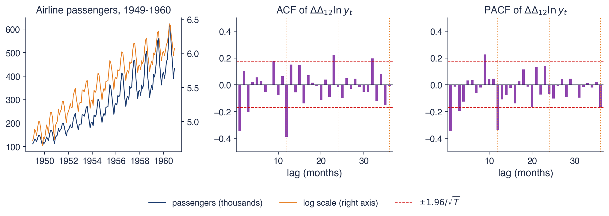
Left: passengers and their log; middle and right: ACF and PACF of \(w_t = \Delta\Delta_{12}\ln y_t\), 131 observations
The logarithm makes the amplitude of the summer peak constant: the multiplicative pattern of the original series becomes additive, and the differences \(\Delta\Delta_{12}\) can be applied without the variance growing over time. For the differenced series \(w_t\), the ACF is −0.34 at lag 1 and −0.39 at lag 12, both outside the band \(\pm 0.17\). These two values correspond to a regular MA(1) and a seasonal MA(1). The value at lag 3, −0.20, is at the edge of the band.
The PACF has large negative values at lags 1 and 12 and smaller negative values after them, at lags 3 and 24, without cutting off abruptly. This shape fits MA terms and not AR terms, for which the PACF would cut off after the last lag of the model. The conclusion of identification is SARIMA\((0,1,1)(0,1,1)_{12}\) for \(\ln y_t\), exactly the model chosen by Box and Jenkins. The theoretical values of (4.6), −0.345 and −0.441, are close to the observed ones, and the estimation on the next slide confirms the order of magnitude of the parameters.
In brief
The log makes the summer swing constant: the multiplicative pattern becomes additive
ACF of \(w_t\): \(\ensuremath{-}0.34\) at lag 1 and \(\ensuremath{-}0.39\) at lag 12, outside the band \(\pm 0.17\)
a regular MA(1) and a seasonal MA(1); lag 3 (\(\ensuremath{-}0.20\)) is borderline
The PACF decays at lags 1, 2, 3 and 12, 24: consistent with MA terms, not AR terms
Conclusion: SARIMA\((0,1,1)(0,1,1)_{12}\), exactly the model of Box and Jenkins
To evaluate the forecasts, the model is estimated on 1949–1958 only, and the last two years, 1959 and 1960, are kept as the test period. From December 1958, forecasts are computed for all 24 months without re-estimating the model, and the forecasts for \(\ln y\) are then transformed back into passenger numbers.
In the chart, the blue line is the observed series, in thousands of passengers, and the dotted vertical line marks the forecast origin. The red line is the airline model forecast, the light red area the 95% interval, and the dashed brown line the seasonal naive forecast, which repeats the 1958 values. Both methods reproduce the shape of the summer peak, but the naive forecast stays at the 1958 level, while the airline model also extrapolates the growth.
In brief
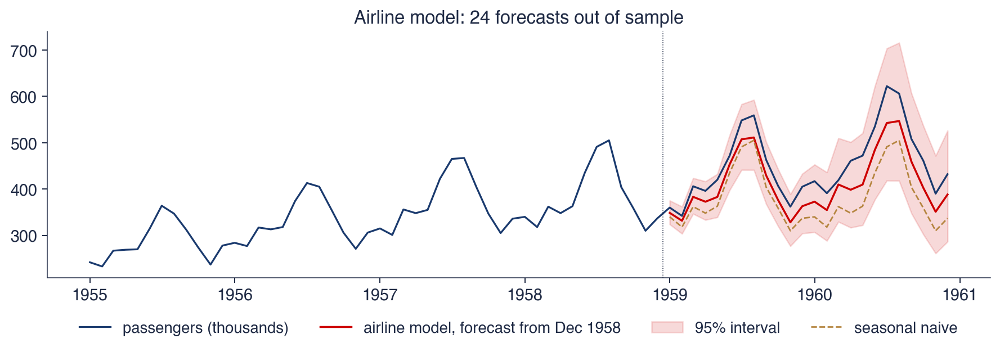
Estimated on 1949–1958, forecasts for the 24 months of 1959–1960, back-transformed from \(\ln y\)
Over 1949–1958 the estimates are \(\hat\theta = -0.342\), with standard error 0.087, and \(\hat\Theta = -0.541\), with standard error 0.105. On the full sample they become \(\hat\theta = -0.402\), with standard error 0.073, and \(\hat\Theta = -0.557\), with standard error 0.096. The residual standard deviation is 3.7% per month. The Ljung–Box test over 24 lags, with 22 degrees of freedom, has p-value 0.37: the residuals show no detectable autocorrelation.
The mean absolute percentage error (MAPE) over 1959–1960 is 8.5% for the airline model and 15.5% for the seasonal naive forecast, which ignores growth. For December 1960, the last month forecast, the model gives 388 thousand passengers, with a 95% interval from 286 to 526 thousand, and the observed value was 432 thousand. The actual value lies inside the interval, but the forecast systematically underestimates the series: growth in 1959–1960 was faster than the model extrapolated, and the observed line stays above the forecast in almost every month.
The width of the 95% interval grows from 51 thousand passengers in the first month to 239 thousand in month 24. The rapid growth comes from the two unit roots at frequency zero, \(\Delta\) and the zero-frequency component of \(\Delta_{12}\), and from the exponential transformation, which widens the interval on the upper side.
residual sd 3.7% per month; Ljung–Box \(Q^*(24)\) on 22 degrees of freedom, p = 0.37
MAPE over 1959–1960: 8.5% for the airline model, 15.5% for the seasonal naive forecast (which ignores growth)
December 1960: forecast 388, interval [286, 526], actual 432: inside, but the model under-predicts the 1959–1960 growth
the interval width grows from 51 (first month) to 239 (24th month): two unit roots
Section summary
On the airline passenger series, the correlograms of \(\Delta\Delta_{12}\ln y_t\) point directly to the airline model: negative values at lags 1 and 12, with a decaying PACF. The estimated model has residuals with no detectable autocorrelation and lowers the two-year MAPE from 15.5% to 8.5% relative to the seasonal naive method. Its forecasts nevertheless underestimate the growth of 1959–1960, which shows the limit of any model that extrapolates past trend.
Case study: Romanian GDP, not adjusted
The second case study applies the same procedure to Romania's unadjusted quarterly real GDP, Q1 2000–Q2 2026. The section compares eight SARIMA models with information criteria, diagnoses the residuals of the chosen model and interprets forecasts for eight quarters. Compared with the passenger series, GDP has fewer observations, a period \(s = 4\) and a large outlier in 2020.
The modelled series is \(y_t = 100\ln Y_t\), where \(Y_t\) is unadjusted real GDP, with \(T = 106\) quarters; the factor 100 makes the errors read in per cent. All eight models have \(d = D = 1\), so the information criteria are computed on the same differenced series and are comparable. For each model, the table gives AICc, BIC, the p-value of the Ljung–Box test over 8 lags, with \(8 - p - q - P - Q\) degrees of freedom, and the estimated standard deviation of the errors \(\hat\sigma\), in per cent.
The first five rows keep the seasonal MA(1) and vary the regular part: the airline model \((0,1,1)(0,1,1)_4\), the model with no regular part \((0,1,0)(0,1,1)_4\), an AR(1), an ARMA(1,1) and an MA(2). The last three rows vary the seasonal part: a seasonal AR(1) in place of the MA, a seasonal ARMA(1,1) and a model with no seasonal term. The smallest value of each criterion is in bold.
In brief
Model
AICc
BIC
LB(8), p
\(\hat\sigma\) (%)
\((0,1,1)(0,1,1)_4\)
520.1
527.6
0.157
3.05
\((0,1,0)(0,1,1)_4\)
519.7
524.8
0.286
3.08
\((1,1,0)(0,1,1)_4\)
520.7
528.3
0.156
3.06
\((1,1,1)(0,1,1)_4\)
518.3
528.4
0.467
2.98
\((0,1,2)(0,1,1)_4\)
518.8
528.8
0.575
3.00
\((0,1,1)(1,1,0)_4\)
529.9
537.5
0.003
3.22
\((0,1,1)(1,1,1)_4\)
522.2
532.2
0.118
3.05
\((0,1,1)(0,1,0)_4\)
545.1
550.2
0.005
3.52
\(y_t = 100\ln Y_t\), real GDP not adjusted, 2000Q1–2026Q2, \(T = 106\); maximum likelihood; all with \(d = D = 1\), so the criteria are comparable
Ljung–Box on 8 lags with \(8 - p - q - P - Q\) degrees of freedom
BIC chooses the model \((0,1,0)(0,1,1)_4\), with value 524.8, which contains only the seasonal MA term. AICc chooses the model \((1,1,1)(0,1,1)_4\), with value 518.3, but its estimates are \(\hat\phi = 0.78\) and \(\hat\theta = -0.94\): the roots of the AR and MA polynomials are close, so the two factors nearly cancel, as in the common-factor example of Chapter 2. The AICc gain over the model chosen by BIC, 1.4 points, is small. In the airline model, the regular MA coefficient is \(\hat\theta = -0.171\), with standard error 0.109, so it is not separated from zero, and \(\hat\Theta = -0.585\).
The seasonal part is well determined. A seasonal AR(1) in place of the seasonal MA has AICc 529.9 and Ljung–Box p-value 0.003, and the model with no seasonal term has AICc 545.1 and p-value 0.005: both have much weaker criteria and correlated residuals. The model kept is the one chosen by BIC: a single ARMA parameter, \(\hat\Theta = -0.577\), with standard error 0.075, and \(\hat\sigma = 3.08\%\).
The value of \(\hat\Theta\) also answers the question the tests left open in section 2. It is far from \(-1\), so the seasonal difference was not applied to a deterministic pattern: the seasonal pattern of GDP changes slowly over time.
In brief
BIC chooses \((0,1,0)(0,1,1)_4\): only the seasonal MA term; AICc chooses \((1,1,1)(0,1,1)_4\)
the AICc model has \(\hat\phi = 0.78\) and \(\hat\theta = \ensuremath{-}0.94\): almost a common factor (Chapter 2), little gain
the airline model: \(\hat\theta = \ensuremath{-}0.171\) (0.109), not significant; \(\hat\Theta = \ensuremath{-}0.585\)
A seasonal AR instead of the seasonal MA, or no seasonal term at all: much worse criteria and correlated residuals
We keep the BIC model: one parameter, \(\hat\Theta = \ensuremath{-}0.577\) (0.075), \(\hat\sigma = 3.08\%\)
The chart shows three diagnostics of the residuals of the SARIMA\((0,1,0)(0,1,1)_4\) model for \(100\ln Y_t\). The left panel is the residual series, in per cent: if the model is correct, it looks like white noise, with no patterns or clusters of large values. The middle panel is the ACF of the residuals, with the band \(\pm 1.96/\sqrt{T}\) and the seasonal lags marked. The right panel is the histogram of the residuals, compared with the density of the Normal distribution with the same mean and standard deviation.
The three panels check different assumptions. The time series shows outliers and changes in variance, the ACF shows remaining autocorrelation, and the histogram shows whether the Normal distribution is an acceptable approximation for the forecast intervals.
In brief
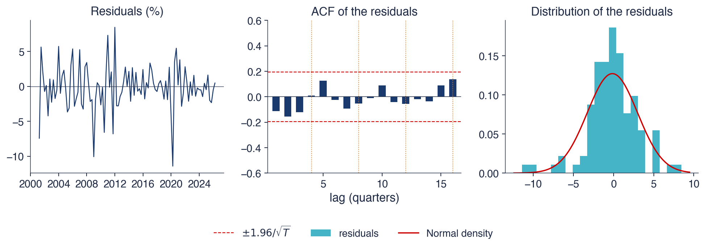
SARIMA\((0,1,0)(0,1,1)_4\) for \(100\ln Y_t\): residuals, their ACF and their distribution
The residuals show no detectable autocorrelation. The Ljung–Box statistic over 8 lags is \(Q^*(8) = 8.55\), with 7 degrees of freedom and p-value 0.286; over 12 lags the p-value is 0.526. No autocorrelation leaves the band at the seasonal lags 4, 8, 12 and 16, so the seasonal structure is fully described by the differences and the term \(\Theta\).
The distribution of the residuals is not the Normal distribution. The Jarque–Bera statistic is 22.0, with p-value below 0.001. The largest residual is −11.4% in the second quarter of 2020, that is, 3.6 standard deviations below zero, in the lockdown period. Without 2020 the Jarque–Bera statistic falls to 13.4, but it stays above the 5% critical value of the \(\chi^2(2)\) distribution, 5.99: the left tail remains heavier than that of the Normal distribution.
The practical consequence concerns the forecast intervals, not the point forecast. Intervals computed with the Normal distribution can be too narrow for large shocks. The next step would be a dummy variable for the 2020 outlier, in the regression with SARIMA errors of section 7.
In brief
No autocorrelation left: \(Q^*(8) = 8.55\) on 7 degrees of freedom, p = 0.286; \(Q^*(12)\): p = 0.526
no spike at the seasonal lags 4, 8, 12, 16: the seasonal structure is captured
Not Normal: Jarque–Bera 22.0 (p \(<\) 0.001); the largest residual is \(-\)11.4% in 2020Q2 (\(\ensuremath{-}3.6\) standard deviations): the lockdown
without 2020, Jarque–Bera falls to 13.4: an additive-outlier dummy would be the next step
The left panel shows unadjusted GDP from 2016, in billion euro, and the forecasts of the SARIMA\((0,1,0)(0,1,1)_4\) model for 8 quarters, from Q3 2026 to Q2 2028. The darker red area is the 80% interval and the lighter red area the 95% interval; both were computed for \(100\ln Y\) and transformed back, so they are asymmetric. The right panel shows annual growth, \(100\,\Delta_4\ln Y\): the blue bars are observed values and the red bars the growth implied by the forecast.
The forecasts keep the saw-tooth pattern: a peak in the fourth quarter and a low in the first. The right panel removes this pattern and shows what the model says about the economy: after three quarters of annual decline in 2025–2026, the implied annual growth stays close to zero.
In brief
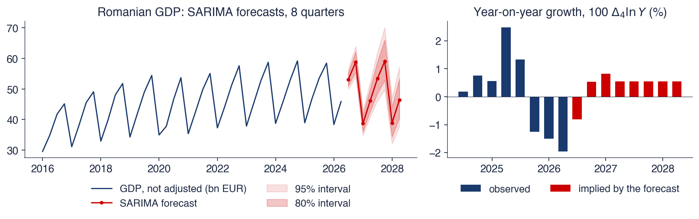
SARIMA\((0,1,0)(0,1,1)_4\), 8 quarters from 2026Q3 to 2028Q2, 80% and 95% intervals; right: implied year-on-year growth
The last observed value is 45.9 billion euro, in the second quarter of 2026. The forecasts for the next four quarters are 53.1, 58.7, 38.7 and 46.1 billion euro. The 95% interval runs from 50.0 to 56.4 billion for the first forecast quarter and from 37.6 to 57.2 billion for the eighth: uncertainty grows fast with the horizon.
The implied annual growth is −0.81% in the first forecast quarter, 0.53% in the second, 0.83% in the third and 0.55% in the fourth, and then stays constant at 0.55%. The model extrapolates the weak growth of recent years. It contains no information about fiscal policy, European funds or the external economy; a macroeconomic forecast would add these as regressors or through expert judgement.
The seasonal pattern of the forecast is a weighted average of the patterns of past years. The weight of the most recent year is \(1 + \hat\Theta = 0.42\), and the weights of earlier years decline geometrically. The pattern is therefore updated moderately: neither as slowly as a fixed pattern nor as fast as a repetition of the last year.
In brief
Last value: 45.9 bn EUR in 2026Q2; forecasts 53.1, 58.7, 38.7, 46.1 bn EUR for the next four quarters
95% interval for the first quarter [50.0, 56.4], for the eighth [37.6, 57.2]
Implied year-on-year growth: \(-\)0.81%, 0.53%, 0.83%, 0.55%, then a constant 0.55%
the model extrapolates the recent weak growth; it knows nothing about fiscal policy or EU funds
The seasonal pattern of the forecast is a weighted average of past years, with weight \(1 + \hat\Theta = 0.42\) on the newest year
The recipe is the same for both series: logarithms, then \(\Delta\Delta_s\), then MA terms at lags 1 and \(s\). For GDP, BIC drops the regular MA term, and AICc chooses an ARMA(1,1) with a near-common factor, hence nearly redundant. The residuals of the chosen model are free of autocorrelation, except for the 2020 outlier, which affects their distribution. The forecasts repeat a smoothed seasonal pattern on a trend line, with ever wider intervals.
In brief
Logs, then \(\Delta\Delta_s\), then MA terms at lags 1 and \(s\): the airline recipe works for both series
For GDP, BIC drops the regular MA term; AICc picks a near-redundant ARMA(1,1)
Residuals are clean except for the 2020 outlier
Forecasts repeat a smoothed seasonal pattern on a trend line, with widening intervals
Section summary
For Romanian GDP, a single parameter, the seasonal MA \(\hat\Theta = -0.577\), describes all the dynamics of the differenced series, with \(\hat\sigma = 3.08\%\) and residuals free of autocorrelation. The value of \(\hat\Theta\) shows a seasonal pattern that evolves slowly. The forecast implies annual growth of about 0.55%, an extrapolation of recent stagnation, with intervals that widen quickly. The model has two visible limits: the 2020 outlier and the absence of information from outside the series.
Seasonal adjustment in practice
Besides raw series, statistical offices publish seasonally adjusted series. This section explains why, how the programs used, X-11 and X-13ARIMA-SEATS, work, and which version of a Eurostat series fits each question. The last two frames compare unadjusted and adjusted series for GDP and retail trade and read the implied seasonal factors.
Users of economic statistics want to know whether the economy grew in the last quarter, not whether the third quarter is larger than the second. The raw series mixes the two questions. In the first quarter of 2026, unadjusted GDP changed by −42.1% on the previous quarter, in log points, and the adjusted series by −0.06%. The first figure is almost entirely a seasonal effect; only the second says something about the business cycle.
Seasonal adjustment estimates the seasonal component \(\hat S_t\) and the calendar component \(\hat C_t\) and removes them from the series. In additive form the adjusted series is \(y_t^{SA} = y_t - \hat S_t - \hat C_t\), and in multiplicative form \(y_t^{SA} = y_t / (\hat S_t\hat C_t)\). The classical decomposition and the STL method of Chapter 0 are simple versions of this idea.
For SARIMA forecasting, however, the unadjusted series is used. The adjustment filters are long moving averages that change the autocorrelation structure of the series. In addition, the adjusted series is revised when new data arrive, because the seasonal factors at the end of the series are re-estimated. A model estimated on the adjusted series would therefore partly describe the effect of the filters, not only the dynamics of the data.
In brief
Users want to know whether the economy grew this quarter, not whether Q3 is bigger than Q2
2026Q1: unadjusted GDP changed by \(-\)42.1% (log points) from the previous quarter; the adjusted series by \(-\)0.06%
the first number is pure season; only the second says something about the business cycle
Seasonal adjustment: estimate the seasonal and calendar components and remove them: \(y_t^{SA} = y_t - \hat S_t - \hat C_t\) (or \(y_t/(\hat S_t\hat C_t)\))
the classical decomposition and STL of Chapter 0 are simple versions of this
For forecasting with SARIMA we use the unadjusted series: adjustment filters change the autocorrelations and are revised when new data arrive
The X-11 method, developed at the US Census Bureau in the 1960s and described in detail by Ladiray and Quenneville (2001), applies moving averages iteratively. For monthly data, a centred \(2 \times 12\) moving average estimates the trend; it has 13 terms, with weight 1/24 at the ends and 1/12 elsewhere, and removes a fixed seasonal pattern of period 12 exactly. The ratio of the series to the trend contains the seasonal and irregular components. The seasonal factors are then obtained by smoothing the values of this ratio across the years, separately for each month, with \(3 \times 3\) and \(3 \times 5\) moving averages. The procedure is repeated, with an improved trend estimate at each step.
Symmetric moving averages cannot be computed at the end of the series, where future observations are missing. X-12-ARIMA (Findley et al., 1998) and its successor, X-13ARIMA-SEATS, added a regARIMA pre-adjustment: a regression with SARIMA errors, often the airline model, which estimates the effects of outliers, working days and Easter. The ARIMA forecasts extend the series, so that symmetric filters can also be applied at the end, and later revisions are smaller. The X-11 filters or the SEATS method, which decomposes the series on the basis of the estimated ARIMA model, are then applied to the pre-adjusted series.
In the European Union, Eurostat and the national statistical institutes follow the guidelines Eurostat (2024). The official software is JDemetra+, which implements both X-13 and TRAMO-SEATS, the method with ARIMA-based pre-adjustment and decomposition.
a centred \(2 \times 12\) moving average for the trend, then \(3 \times 3\) and \(3 \times 5\) moving averages of each month across years for the seasonal factors
X-12-ARIMA (Findley et al. (1998)) and X-13ARIMA-SEATS add a regARIMA pre-adjustment:
regression with SARIMA errors (often the airline model) for outliers, working days, Easter
ARIMA forecasts extend the series, so the symmetric filters also work at the end: smaller revisions
then X-11 filters or SEATS (model-based decomposition of the ARIMA model)
EU: Eurostat and the national institutes follow Eurostat (2024), with the JDemetra+ software (X-13 and TRAMO-SEATS)
Each Eurostat series is published in several versions, selected through the `s_adj` dimension. The NSA version (not seasonally adjusted) contains the raw data. The CA version (calendar adjusted) is adjusted only for calendar effects, that is, for the number of working days and for holidays. The SA version (seasonally adjusted) is seasonally adjusted, and the SCA version (seasonally and calendar adjusted) is adjusted both for seasonality and for calendar effects.
Each question has its version. Growth over the previous quarter or month is computed on SCA, because on raw data it would be dominated by the season. Growth over the same quarter of the previous year can be computed on NSA or CA: the seasonal pattern cancels out in the one-year difference, but the calendar effect does not, because the number of working days and the date of Easter differ from year to year. SARIMA modelling and forecasting are done on NSA, with calendar regressors.
Adjustment moves output between quarters; it neither creates nor removes it. The annual totals of the NSA and SCA versions are therefore close: for 2024, both are 196.4 billion euro.
In brief
Each series comes in several versions (dimension s_adj):
NSA: not seasonally adjusted (the raw data)
CA: calendar adjusted only (working days, holidays)
SA: seasonally adjusted; SCA: seasonally and calendar adjusted
Which one for which question
quarter-on-quarter or month-on-month growth: SCA
year-on-year growth: NSA or CA (the seasonal pattern cancels, the calendar does not)
SARIMA modelling and forecasting: NSA, with calendar regressors
The annual totals of NSA and SCA are close (2024: 196.4 and 196.4 bn EUR): adjustment moves output between quarters, it does not create it
The top panels compare the NSA series, in blue, with the SCA series, in red: GDP in billion euro at 2010 prices, on the left, and the retail trade volume, an index with 2021 = 100, on the right. The adjusted series runs through the middle of the seasonal oscillations and follows the trend and the cycle.
The bottom panels show the NSA/SCA ratio, that is, the combined seasonal and calendar factor. A factor of 1.2 means that the raw series is 20% above the adjusted level in that period. For GDP, each quarter has its own line, from 2010 to 2026; for retail trade, the monthly factor is a single line.
In brief
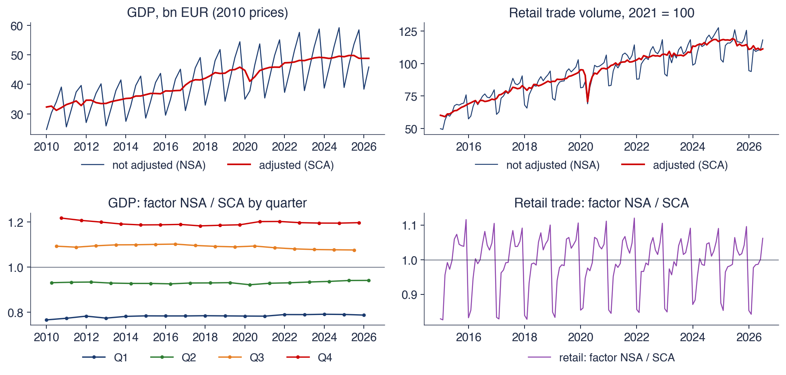
Eurostat NSA and SCA: GDP (top left) and retail trade (top right); bottom: the implied seasonal and calendar factors NSA/SCA
For GDP, the average factors over 2015–2019 are 0.78 in the first quarter, 0.93 in the second, 1.10 in the third and 1.19 in the fourth. Output in the first quarter is therefore about one fifth below an average quarter, and output in the fourth quarter about one fifth above. The factors move slowly across the years; for example, the fourth-quarter factor declines slightly after 2010. This slow movement is the stochastic seasonality that \(\hat\Theta\) measures in the SARIMA model.
For retail trade, the average factor over 2016–2019 is 1.10 for December and 0.84 for January: Christmas shopping, followed by the January low. The retail factor also jumps from month to month because of the number of working days and the date of Easter; this is the calendar part of the SCA adjustment, modelled explicitly in section 7.
The adjusted GDP series shows two episodes that the raw series hides: the drop of 2020 and the stagnation of 2025–2026. In the raw series both are smaller than the usual seasonal oscillation and cannot be distinguished by eye.
In brief
GDP factors 2015–2019: Q1 0.78, Q2 0.93, Q3 1.10, Q4 1.19: Q1 output is about a fifth below an average quarter
the factors move slowly over the years: the stochastic seasonality that \(\hat\Theta\) measures
Retail trade: December factor 1.10, January 0.84 (2016–2019): Christmas shopping, then the January low
The retail factor also jumps from month to month because of working days and Easter: the calendar part of SCA (Section 7)
The adjusted GDP shows the 2020 fall and the 2025–2026 stagnation that the raw series hides
Seasonal adjustment removes the estimated components \(\hat S_t\) and \(\hat C_t\) to reveal the trend and the cycle. X-13ARIMA-SEATS first performs a regARIMA pre-adjustment, with outliers, calendar effects and forecasts that extend the series, and then applies the X-11 or SEATS filters; in the European Union, the software used is JDemetra+. Growth over the previous quarter is computed on SCA, annual growth on NSA or CA, and the SARIMA forecast on NSA.
In brief
Seasonal adjustment removes \(\hat S_t\) and \(\hat C_t\) to show the trend and the cycle
X-13ARIMA-SEATS: regARIMA pre-adjustment (outliers, calendar, forecasts), then X-11 or SEATS; in the EU, JDemetra+
Seasonally adjusted series answer the question about the business cycle, unadjusted series the question about forecasting. For Romanian GDP, the seasonal factors range from 0.78 in the first quarter to 1.19 in the fourth, and adjustment turns a −42.1% change on the previous quarter into one of −0.06%. The regARIMA pre-adjustment of the official programs is itself a regression with SARIMA errors, and the next section builds such a regression for the Easter effect.
Fourier terms and calendar effects
This section treats seasonality as a deterministic function of time and the calendar, described by regressors. Seasonal dummy variables describe any shape but require \(s - 1\) coefficients; Fourier terms describe smooth patterns with far fewer coefficients and work for any period, including a non-integer one. Calendar effects, that is, working days and moving holidays, are known in advance and enter the model as regressors. The section ends with a regression with SARIMA errors that measures the effect of Orthodox Easter on Romanian retail trade.
The model with seasonal dummy variables is \(y_t = \beta_0 + \sum_{j=2}^{s}\gamma_jD_{jt} + u_t\), with \(s - 1\) seasonal coefficients. Here \(\beta_0\) is the level of season 1, which serves as the base, and \(\gamma_j\) the difference between season \(j\) and season 1; a dummy for every season plus the constant would be perfectly collinear. The model describes any shape of the pattern, but the number of coefficients grows with the period: 51 for \(s = 52\) weeks, 167 for \(s = 168\) hours, 364 for \(s = 365\) days. For the annual period of daily data, 365.25 days, dummy variables cannot even be defined.
Fourier terms for a period \(m\) replace the dummy variables with pairs of sines and cosines:
Harmonic \(k\) is a wave with \(k\) cycles per period, and \(\alpha_k\) and \(\beta_k\) are its coefficients; together they fix the amplitude and phase of the wave. \(K\) is the number of sine–cosine pairs, so the model has \(2K\) coefficients. For even \(m\),\(K = m/2\) reproduces the dummy-variable model exactly (the last harmonic has only the cosine term, because its sine is zero at every point), and a small \(K\) gives a smooth pattern.
Fourier terms have two advantages. The period \(m\) can be non-integer, for example 365.25 days, and several periods can be combined in the same regression. For hourly data, \(K = 5\) harmonics for the 24-hour period and \(K = 4\) for the 168-hour period give 18 regressors, instead of the \(23 + 167\) dummy variables. The number \(K\) is chosen by AICc or by cross-validation. The same terms underlie the TBATS and Prophet models of section 9.
\(\beta_0\): the level of season 1; \(\gamma_j\): the difference between season \(j\) and season 1
too many for \(s = 52\) weeks, \(s = 168\) hours or \(s = 365\) days; impossible for \(s = 365.25\)
Fourier terms for a period \(m\): \(\sum_{k=1}^{K}\left[\alpha_k\sin\frac{2\pi kt}{m} + \beta_k\cos\frac{2\pi kt}{m}\right]\)
\(\alpha_k, \beta_k\): the coefficients of the \(k\)-th harmonic, a wave with \(k\) cycles per period; \(K\): the number of sine–cosine pairs
\(2K\) coefficients; \(K = m/2\) reproduces the dummies exactly (for even \(m\)); a small \(K\) gives a smooth pattern
\(m\) may be non-integer, and several periods can be combined: e.g. \(K = 5\) for \(m = 24\) and \(K = 4\) for \(m = 168\) give 18 regressors instead of \(23 + 167\)
\(K\) is chosen by AICc or by cross-validation; the same terms are inside TBATS and Prophet (Section 9)
The left panel shows the monthly seasonal effect of the logarithm of tourist nights over 2012–2019, obtained after removing the trend with a centred 13-month moving average. The 12 points are the monthly effects, in log units: January is about 0.55 below the mean, August about 0.85 above. The four curves are the Fourier fits with \(K = 1, 2, 3\) and 6 harmonics, and the legend gives the number of coefficients and the coefficient of determination \(R^2\) of each fit.
The right panel shows the first three harmonics: the pairs \(\cos(2\pi kt/12)\) and \(\sin(2\pi kt/12)\) for \(k = 1, 2, 3\). The first harmonic makes one cycle per year, the second two cycles, the third three. A linear combination of these waves, with coefficients estimated by least squares, gives the curves of the left panel.
In brief
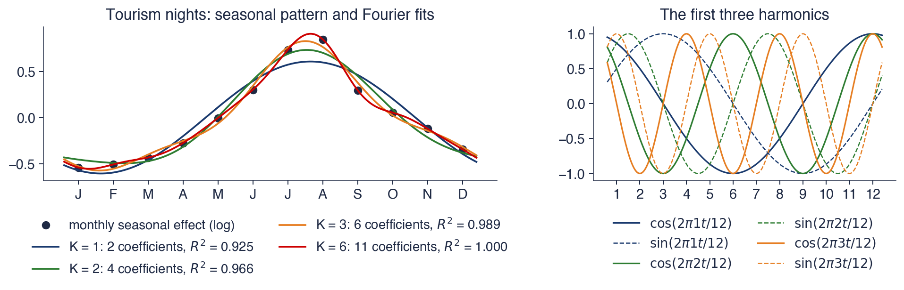
Monthly seasonal effect of \(\ln\)(tourism nights), 2012–2019, after removing a 13-month centred mean; fits with \(K = 1, 2, 3, 6\)
A single harmonic, \(K = 1\), with two coefficients, already explains 92.5% of the variation of the monthly effects (\(R^2 = 0.925\)): the summer peak is almost a single sine wave per year. With \(K = 2\),\(R^2\) rises to 0.966, and with \(K = 3\) to 0.989, using six coefficients instead of eleven.
The fit with \(K = 6\) has 11 coefficients and passes through all 12 monthly points, like the model with 11 dummy variables; \(R^2\) is 0.999. Higher harmonics add ever finer detail. The sharp August peak requires at least \(K = 3\): with one or two harmonics, the curve flattens the peak and shifts it towards July.
The choice of \(K\) is a trade-off between bias and variance. A small \(K\) gives a smooth pattern, robust to noise; a large \(K\) reproduces every month, including the noise. For 12 months the difference in parameters is small, but for periods of 168 or 365.25 the difference between a few harmonics and hundreds of dummy variables is decisive.
In brief
\(K = 1\) (two coefficients) already gives \(R^2 = 0.925\): the summer peak is close to a single wave
\(K = 2\): 0.966; \(K = 3\): 0.989 with six coefficients instead of eleven
\(K = 6\) (11 coefficients) interpolates the 12 monthly points: the same as 11 dummies, \(R^2 = 0.999\)
Higher harmonics add sharper detail: the August peak needs \(K \ge 3\)
Calendar effects come from the composition of each month. A month with more working days, that is, Mondays to Fridays that are not public holidays, produces and sells more than a month with fewer. The number of working days is known in advance for any future month, so it is a regressor that can be used in forecasts without being forecast itself.
Moving holidays are harder to handle. Orthodox Easter falls between 4 April and 8 May: on 5 May in 2024, on 20 April in 2025, on 12 April in 2026 and on 2 May in 2027. Pre-Easter shopping therefore shifts between March, April and May from year to year. In Python, the date is computed with `dateutil.easter.easter(y, EASTER_ORTHODOX)`, and Pentecost falls 49 days after Easter.
The X-13 Easter regressor, `easter[w]`, assumes that the effect is spread evenly over the \(w\) days before Easter Sunday. The value of \(E_t\) is the share of these \(w\) days that falls in month \(t\). For \(w = 10\), Easter on 20 April gives \(E_{\text{April}} = 1\), because 10–19 April all fall in April. Easter on 5 May gives \(E_{\text{April}} = 0.6\) and \(E_{\text{May}} = 0.4\): six of the ten days, 25–30 April, are in April, and four, 1–4 May, in May.
In brief
Working days: a month with more Monday–Friday non-holiday days produces and sells more
known in advance: a regressor that can be used in forecasts
Moving holidays: Orthodox Easter falls between 4 April and 8 May
5 May 2024, 20 April 2025, 12 April 2026, 2 May 2027: shopping shifts between March, April and May
in Python: dateutil.easter.easter(y, EASTER_ORTHODOX); Pentecost is 49 days later
Easter regressor (X-13 easter[w]): \(E_t\) = share of the \(w\) days before Easter Sunday that fall in month \(t\)
\(w = 10\): Easter on 20 April gives \(E_{\text{April}} = 1\); on 5 May, \(E_{\text{April}} = 0.6\) and \(E_{\text{May}} = 0.4\)
\(E_t\) is the Easter regressor defined above, \(\mathrm{WD}_t\) the number of working days in month \(t\), and \(\beta_E\) and \(\beta_W\) their effects, in per cent. The errors \(u_t\) follow the airline model, so the regression describes the calendar effects and the SARIMA model describes everything else: the trend, the seasonal pattern and the dynamics.
This is the regARIMA model of X-13. It is estimated in one step by maximum likelihood, for example with `SARIMAX` and the `exog` argument. Estimation by ordinary least squares, ignoring the SARIMA errors, would give wrong standard errors: the errors \(u_t\) are non-stationary and autocorrelated, and the regression would suffer from the spurious regression problem of Chapter 3.
The data are the unadjusted volume of Romanian retail trade from Eurostat, January 2010 to July 2026, for two aggregates: food (G47_FOOD) and total retail (G47). April and May 2020, in the lockdown period, have their own dummy variables, so that their fall does not influence the estimates of the other effects.
The left panel shows the date of Orthodox Easter Sunday between 2000 and 2030, as a day of April: a value above 30 means a date in May, and the red dots mark the years with Easter in May. The date varies by more than a month from year to year, with no simple pattern.
The right panel links the date of Easter to sales. The horizontal axis is the year-on-year change in the Easter share of the month, \(E_t - E_{t-12}\); the vertical axis is the annual growth of food sales in that month, in per cent. Each point is a March, April or May, and 2020 and 2021 are excluded because of the pandemic. The dashed line is the least-squares regression line.
In brief
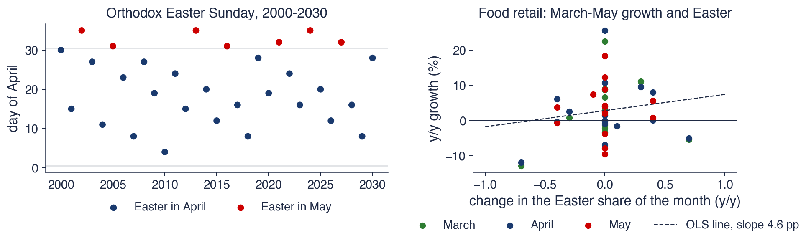
Left: Orthodox Easter Sunday as a day of April (above 30: May); right: year-on-year growth of food retail in March–May against the change in the Easter share (2020–2021 left out)
For food sales, the estimated Easter coefficient is \(\hat\beta_E = 5.9\%\), with standard error 2.3 and \(t\) statistic 2.6. A month that contains all 10 days before Easter sells about 5.9% more food than the same month without Easter. One more working day raises food sales by 0.59%, with standard error 0.17, and the dummy for April 2020 is −15%.
For total retail, the Easter effect is 0.8%, with standard error 1.9, so it is not separated from zero, while the effect of one working day is 1.02%, with standard error 0.15. The Easter effect is concentrated in food sales, and the working-day effect is present in all sales.
The raw scatter in the right panel is noisy, and the slope of the simple regression line is 4.6 percentage points. Annual sales growth also depends on VAT changes, prices and the business cycle, which do not appear on the horizontal axis. The regression with SARIMA errors separates these effects, and its estimate is more precise than the slope of the scatter. Easter fell in May in 2002, 2005, 2013, 2016, 2021 and 2024; a forecast that ignores the date of Easter is systematically wrong in April and May in those years.
In brief
Food retail: \(\hat\beta_E = 5.9\%\) (se 2.3, \(t = 2.6\)): a month that holds the 10 days before Easter sells about 5.9% more food
one working day more: \(+0.59\%\) (se 0.17); April 2020: \(\ensuremath{-}15\%\)
All retail: Easter \(0.8\%\) (se 1.9), not significant; working days \(+1.02\%\) (se 0.15)
the Easter effect is in food, the working-day effect in everything
The raw scatter is noisy (slope 4.6 percentage points): VAT changes and prices also move year-on-year growth; the regression separates the effects
Easter fell in May in 2002, 2005, 2013, 2016, 2021, 2024: a forecaster who ignores this mistakes April and May
Fourier terms describe a seasonal pattern with \(2K\) coefficients, for any period, even a non-integer one. Working days and moving holidays are known in advance and are modelled as regressors. Romanian food sales rise by about 5.9% in the month of Easter, while total retail follows the number of working days. Regression with SARIMA errors estimates the effects of the regressors and the dynamics of the series together, with correct standard errors.
In brief
Fourier terms describe a seasonal pattern with \(2K\) coefficients, for any period, even non-integer
Working days and moving holidays are known in advance: model them as regressors
Romanian food retail rises about 5.9% in the Easter month; total retail follows working days
Regression with SARIMA errors: estimate regressors and dynamics together
Section summary
Seasonality can also be treated as a deterministic function of time. Fourier terms describe it with few parameters: a single harmonic explains 92.5% of the monthly pattern of tourism. Calendar effects are modelled as regressors known in advance, and for food sales the Easter effect, 5.9%, is of the order of magnitude of annual growth. Series with long or non-integer periods, as in the next section, can only be modelled this way.
Multiple seasonality: electricity load
Electricity load has several periods at once: the day, the week and the year. SARIMA models are not suited to such a series, because they have a single integer period. This section describes hourly and daily load in Romania, decomposes it with MSTL and builds a dynamic harmonic regression for daily load, with annual Fourier terms, day-of-week dummies and holidays.
Load is the electrical energy consumed in the power system, measured in MW as the mean over each hour. Electricity cannot be stored at scale, so generation must match load at every moment. Operators need forecasts for every hour of the next day: for the day-ahead market, for sizing reserves and for grid planning.
The data come from ENTSO-E, the European Network of Transmission System Operators for Electricity, from the "monthly hourly load values" series for Romania. They cover 39,406 hours over 2022–2026. All hours are expressed in Romanian winter time (UTC+2), so that the switches to and from summer time create no missing or duplicate hours.
Load forecasting is a field with its own competitions, such as GEFCom2014, described by Hong et al. (2016), in which different methods were compared on the same data under identical conditions.
In brief
Load: the electricity consumed in the system, in MW (hourly averages); it must be matched by generation at every moment
forecasts are needed for every hour of the next day: day-ahead markets, reserves, grid planning
Data: ENTSO-E (the European network of transmission system operators), “monthly hourly load values”, Romania
39 406 hours, 2022–2026, Romanian winter time (UTC+2) to avoid the clock changes
Load forecasting has its own competitions: GEFCom2014 (Hong et al. (2016))
The left panel shows hourly load, in GW, over three weeks, from 13 January to 2 February 2025; the beige areas mark weekends. Each day has its own shape: a dip at night, a rise in the morning and a peak in the evening. Weekend days have the same shape, but at a lower level.
The right panel shows the sample ACF of hourly load in 2025, up to lag 400, that is, beyond two weeks. The dotted vertical lines mark lags 24, 168 and 336 hours: one day, one week and two weeks. The dense oscillations of the ACF with a period of 24 hours reflect the daily cycle, and the higher peaks at 168 and 336 reflect the weekly cycle.
In brief
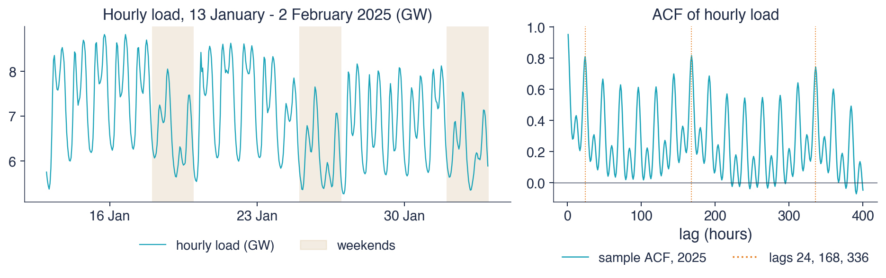
Left: three weeks of January 2025; right: sample ACF of all hours of 2025 up to lag 400
The daily cycle has its low around 3:00, with a mean load of 5.3 GW in 2025, and its peak around 19:00, with 7.3 GW. The autocorrelation is 0.81 at lag 24 and 0.43 at lag 12: load at the same hour of the previous day is a good predictor, and load 12 hours earlier, which falls in the other half of the daily cycle, a weaker one.
The weekly cycle shows in the lower level of weekends. The autocorrelation at lag 168, one week, is 0.82, slightly above that at lag 24. The same hour one week earlier is therefore the best single predictor: Monday's load resembles last Monday's, not Sunday's.
On top of these two cycles sits an annual cycle, driven by heating in winter and air conditioning in summer. The series therefore has three periods: 24, 168 and about 8,766 hours. A SARIMA model has a single integer period \(s\) and is not suitable: a polynomial in \(L^{168}\) is slow to estimate and unstable, the annual period of 365.25 days is not an integer, and holidays break the weekly pattern. The suitable tools are MSTL, dynamic harmonic regression (DHR), TBATS and Prophet.
In brief
Daily cycle: lowest around 3:00 (5.3 GW on average in 2025), highest around 19:00 (7.3 GW)
ACF \(0.81\) at lag 24, \(0.43\) at lag 12
Weekly cycle: weekends are lower; ACF \(0.82\) at lag 168 (one week), above the lag-24 value
the same hour one week ago is the best single predictor: Monday is like last Monday, not like Sunday
And an annual cycle on top (heating and air conditioning): three periods, 24, 168 and about 8766 hours
SARIMA is not enough: it has one integer period \(s\), while here \(s = 24\), \(168\) and \(8766\) act at once
a polynomial in \(L^{168}\) is slow and unstable, 365.25 is not an integer, and holidays break the weekly pattern
answers: MSTL, the dynamic harmonic regression (DHR), TBATS, Prophet
MSTL (Bandara, Hyndman and Bergmeir, 2025) extends the STL decomposition of Chapter 0 to several periods. The algorithm applies STL repeatedly, once for each period, here 24 and 168 hours, starting with the shortest period. At each step, the seasonal component of one period is estimated from the series after subtracting the components of the other periods estimated at the previous step. The iterations continue until the components settle.
The chart shows the decomposition for four weeks, from 3 February to 2 March 2025. The first panel is load, in GW. The second is the trend, which varies slowly between about 7.0 and 7.3 GW. The third is the daily component, of period 24, the fourth the weekly component, of period 168, and the fifth the remainder. Load is the sum of these four components.
Of the variance of load around the trend, the daily component explains 70%, the weekly component 29% and the remainder 2%. The amplitude of the daily component, the difference between its maximum and minimum, is 2.8 GW in the first week, and that of the weekly component 2.1 GW. Together the two cycles explain almost all the short-run variation of load.
The weekly component is almost flat from Monday to Friday and falls on Saturday, and further on Sunday. The remainder is small but not white noise: it has episodes of positive and negative values lasting a few days, produced by cold spells and holidays. A decomposition is not a forecasting model; a forecasting model adds error dynamics and regressors for special days to these components.
In brief
Of the variance around the trend: 70% daily component, 29% weekly component, 2% remainder
range of the daily component in the first week: 2.8 GW; of the weekly one: 2.1 GW
The weekly component is flat Monday to Friday and drops on Saturday and more on Sunday
The remainder is small but not white noise: cold spells and holidays; a forecasting model adds dynamics and regressors
The left panel shows the daily mean load, in GW, for the 1,642 days of 2022–2026. The orange dots mark public holidays, and the red dots the four days of Orthodox Easter, Friday to Monday. The dense oscillation is the weekly cycle, and the waves with peaks in January are the annual cycle.
The right panel shows the mean load for each day of the week, excluding public holidays. The working days are close to each other, between about 6.35 and 6.5 GW, with Monday slightly lower; Saturday is visibly lower, and Sunday is the lowest day.
In brief
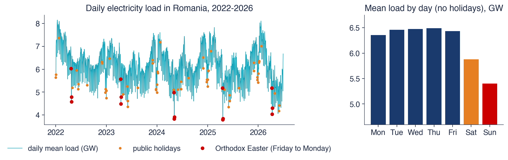
Daily mean load, 2022–2026, 1 642 days; Romanian public holidays marked; right: mean by day of the week, holidays excluded
In the weekly cycle, Saturday load is 9% and Sunday load 17% below Wednesday's. In the annual cycle, January load is 25% above May's, and summer has a smaller secondary peak, produced by air conditioning.
Holidays produce the largest deviations. The lowest day in the sample is Easter Sunday, 20 April 2025, with 3.79 GW, against a sample mean of 6.18 GW. The four days of Easter, Friday to Monday, average 4.62 GW, and the period between Christmas and New Year is also low. Such days do not follow the weekly pattern and need their own regressors.
The level of load falls over 2022–2026. Two possible causes are the price shock of 2022 and rooftop solar panels: energy produced and consumed on site covers part of the demand without passing through the grid, so it does not appear in the load measured by the system operator.
In brief
Week: Saturday 9% and Sunday 17% below Wednesday
Year: January 25% above May; a smaller summer peak (air conditioning)
Holidays: the lowest day of the sample is Easter Sunday, 20 April 2025 (3.79 GW, mean 6.18 GW)
the four Easter days (Friday to Monday) average 4.62 GW; Christmas to New Year is also low
The level falls over 2022–2026; possible causes: the price shock of 2022 and rooftop solar panels that cover part of the demand behind the meter
The first terms are four annual Fourier harmonics, with coefficients \(\alpha_k\) and \(\beta_k\). The variables \(D^{\mathrm{day}}_{jt}\) are day-of-week dummies, with Sunday as the base, so \(\delta_j\) is the effect of day \(j\) relative to Sunday. \(H_t\) marks public holidays, \(E_t\) the four days of Easter, Friday to Monday, and \(X_t\) the period 24 December–2 January; \(\lambda_1\),\(\lambda_2\) and \(\lambda_3\) are their effects, in GW. The errors \(u_t\) follow an ARIMA(1,1,1) model, chosen by AIC. A model of this type, with Fourier terms and ARIMA errors, is a dynamic harmonic regression, described in Hyndman and Athanasopoulos (2021), section 10.5.
The coefficients are estimated on data up to the first forecast origin, 30 June 2025. Relative to Sunday, load is higher by 1.08 GW on Wednesday, by 0.88 GW on Monday and by 0.50 GW on Saturday. A public holiday lowers load by 0.38 GW, with standard error 0.02. The days of Easter lower it by a further 0.58 GW, on top of the holiday effect, and the Christmas–New Year period by 0.61 GW.
The error model has AR coefficient 0.80 and MA coefficient −0.98, and the standard deviation of the errors is \(\hat\sigma = 186\) MW. The MA coefficient close to −1 almost entirely offsets the difference applied to the errors, which indicates a slowly varying level rather than a random walk. The Ljung–Box test over 14 lags has p-value below 0.001: a little dynamics remains in the residuals, small but detectable with such a long sample.
\(\alpha_k, \beta_k\): annual Fourier coefficients; \(\delta_j\): effect of weekday \(j\) against Sunday; \(\lambda_1, \lambda_2, \lambda_3\): effects of the special days, in GW
annual Fourier terms; weekday dummies (Sunday is the base); \(H\) public holiday, \(E\) Easter (Friday to Monday), \(X\) 24 December – 2 January
Hourly load has daily, weekly and annual cycles, and daily load weekly and annual cycles. SARIMA handles a single integer period, while MSTL decomposes the series into one component for each period. Holidays, especially Easter, produce the largest deviations and need regressors. Dynamic harmonic regression, (4.10), combines Fourier terms, calendar dummies and ARIMA errors in a flexible model whose components can be read directly.
In brief
Hourly load has daily, weekly and annual cycles; daily load has weekly and annual cycles
SARIMA handles one integer period; MSTL decomposes several
Holidays, Easter most of all, are the largest deviations: they need regressors
For electricity load, the daily and weekly components together explain 99% of the variance around the trend, and holidays are the largest deviations from the pattern: Easter Sunday 2025 had 3.79 GW, against a mean of 6.18 GW. Dynamic harmonic regression describes the annual cycle with eight Fourier coefficients, the weekly cycle with dummy variables and holidays with three regressors, and the remaining dynamics with ARIMA errors. The next section presents two models that automate some of these choices.
TBATS and Prophet
Two models built for complex seasonality are widely used in practice. TBATS extends exponential smoothing with Fourier terms that evolve over time, and Prophet is a regression with a piecewise trend, Fourier terms and holiday effects. The section describes both models, reads the Prophet components for Romanian daily load and compares the two models with dynamic harmonic regression.
TBATS (De Livera, Hyndman and Snyder, 2011) extends the exponential smoothing (ETS) of Chapter 0 to series with complex seasonality. The name lists the parts of the model: trigonometric seasonality (T), Box–Cox transformation (B), ARMA errors (A), trend (T) and seasonal components (S). The measurement equation is
where \(y_t^{(\omega)}\) is the series after a Box–Cox transformation with parameter \(\omega\),\(\ell_t\) the level, \(b_t\) the slope, \(\phi\) the damping factor of the slope, \(s^{(i)}_t\) seasonal component \(i\), and \(d_t\) the error, which follows an ARMA process. The level and slope are updated at each step as in Holt's method.
Each period \(m_i\) has \(K_i\) harmonics. Harmonic \(j\) is a (cosine, sine) pair that rotates at each step by the angle \(2\pi j/m_i\) and is corrected by the current error. The result is a Fourier pattern as in (4.8), but with coefficients that evolve over time, hence a stochastic seasonal pattern. The periods can be non-integer, and the number of parameters does not grow with the length of the period.
The model makes its choices automatically, by AIC: whether to use the Box–Cox transformation, whether it has a trend, a damped trend or no trend, how many harmonics \(K_i\) each period has and what ARMA orders the errors have. For daily load up to June 2025, with periods 7 and 365.25, the chosen model has no Box–Cox transformation and no trend, and has \(K = 3\) weekly harmonics, \(K = 9\) annual harmonics and ARMA(1,2) errors, 28 states in total. Its limits are the lack of regressors, hence of holidays and Easter, and its slowness on long series; in Python the model is available in the `tbats` package.
trigonometric seasonality (T), Box–Cox transformation (B), ARMA errors (A), trend (T), seasonal components (S)
\(y_t^{(\omega)} = \ell_{t-1} + \phi b_{t-1} + \sum_{i}s^{(i)}_{t-1} + d_t\), \(d_t\) ARMA(\(p,q\)); level and trend updated as in Holt's method
\(y_t^{(\omega)}\): the series after a Box–Cox transformation with parameter \(\omega\); \(\ell_t\): level; \(b_t\): slope; \(\phi\): damping factor; \(s^{(i)}_t\): seasonal component \(i\)
each period \(m_i\) has \(K_i\) harmonics \(s^{(i)}_{j,t}\), each a rotating pair (cosine, sine) updated by the errors: a Fourier pattern that can evolve
Automatic choices by AIC: Box–Cox or not, trend or damped trend or none, the \(K_i\), the ARMA orders
daily load to June 2025, periods 7 and 365.25 (no Box–Cox, no trend): \(K = 3\) weekly and \(K = 9\) annual harmonics, ARMA(1,2), 28 states
Limits: no regressors, hence no holidays or Easter; slow on long series; Python package tbats
Prophet (Taylor and Letham, 2018), developed at Meta, is a regression on time with three components:
\[y(t) = g(t) + s(t) + h(t) + \varepsilon_t.\]
(4.12)
The trend \(g(t)\) is piecewise linear (or logistic, for series with saturation), with a slope that can change at changepoints. The model starts from many candidate changepoints, and a Laplace prior on the slope changes shrinks most of them to zero, like a lasso penalty. The seasonal component \(s(t)\) is made of Fourier terms, with \(K = 10\) harmonics for the year and \(K = 3\) for the week by default. The component \(h(t)\) contains one effect for each holiday in a list of dates, optionally with windows of a few days around it.
The model is estimated with Stan, at the maximum of the posterior distribution. Forecast intervals are obtained by simulation: they include the noise and future changepoints generated with the frequency and size of past ones. Prophet has no autoregressive part: today's error does not change tomorrow's forecast, and all dynamics are described by the functions of time.
Prophet was built for large numbers of economic series with strong calendar effects and missing data, for which an analyst cannot identify each model by hand. In Python it is available in the `prophet` package.
In brief
Taylor and Letham (2018) (Meta): a regression in time, \(y(t) = g(t) + s(t) + h(t) + \varepsilon_t\)
\(g(t)\): piecewise-linear (or logistic) trend whose slope may change at changepoints; a Laplace prior shrinks most changes to zero
\(s(t)\): Fourier terms, by default \(K = 10\) for the year and \(K = 3\) for the week
\(h(t)\): one effect per holiday (with optional windows around it), from a list of dates
Estimated by Stan (maximum a posteriori); intervals simulate future changepoints and the noise
no autoregressive part: today's surprise does not move tomorrow's forecast
Built for many business series with strong calendar effects and missing data; Python package prophet
The chart shows the components of the Prophet model estimated on daily load from January 2022 to June 2025, with the list of Romanian public holidays. The top-left panel shows daily load and the trend \(g(t)\), in GW; the dotted vertical lines are the changepoints actually used. The top-right panel shows the weekly component, as a deviation in GW for each day.
The bottom-left panel shows the yearly component for 2024, as a deviation in GW from the trend. The bottom-right panel shows the estimated holiday effects, in GW, sorted by size. Each component is added to the trend, so the forecast for a day is the trend plus the day-of-week effect, plus the yearly effect of the date, plus the holiday effect if the day is a holiday.
In brief
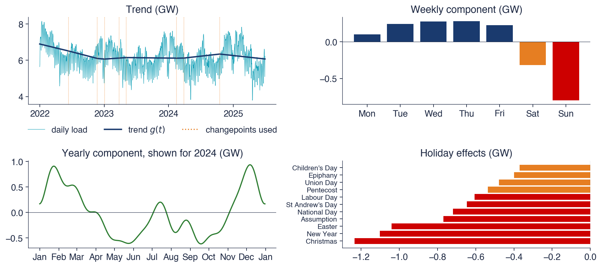
Prophet with Romanian public holidays, daily load 2022 – June 2025
The trend falls from 6.89 to 6.07 GW and is flatter after 2023. The model starts from 25 candidate changepoints, and the prior shrinks most of them to zero; only a few slope changes remain active. The weekly component is +0.27 GW on Wednesday, −0.32 GW on Saturday and −0.80 GW on Sunday, values close to the differences between days in the daily load chart.
In 2024 the yearly component has its maximum in early December, +0.93 GW on 7 December, and its minimum in mid-September, −0.62 GW on 18 September. Between them the curve has a secondary peak in July, produced by air conditioning. The holiday effects are −1.24 GW for Christmas, −1.10 GW for New Year and −1.04 GW for Easter; Children's Day, 1 June, lowers load by only 0.37 GW.
The main advantage of the model is that each component has a direct interpretation and can be compared with what is known about the economy: Sunday, the winter holidays and heating have the largest effects, and a day off in early summer has a small one.
In brief
Trend from 6.89 to 6.07 GW, flatter after 2023; 25 candidate changepoints, most shrunk to zero
Yearly: highest in early December (\(+0.93\) GW, 7 December 2024), lowest in mid-September (\(\ensuremath{-}0.62\) GW, 18 September 2024), shown for 2024
Holidays: Christmas \(\ensuremath{-}1.24\), New Year \(\ensuremath{-}1.10\), Easter \(\ensuremath{-}1.04\) GW; Children's Day only \(\ensuremath{-}0.37\) GW
Each component is readable and can be checked against what we know about the economy
The table compares the three models along six dimensions. All describe seasonality with Fourier terms and accept several periods. In DHR and Prophet the pattern is fixed, while in TBATS it evolves over time. DHR and Prophet accept regressors, hence holidays, and TBATS does not. Short-run dynamics are described by ARMA errors in DHR and TBATS and are absent from Prophet. The trend is described through the ARIMA errors in DHR, through a local level and slope, as in Holt's method, in TBATS and through a piecewise linear function in Prophet. DHR and Prophet are fast to estimate, TBATS slow.
In essence, all three are regressions on sines and cosines and differ in what else they model: error dynamics, the evolution of the pattern, the trend and the calendar. Which of them forecasts better is an empirical question, and the next section answers it out of sample.
In brief
DHR
TBATS
Prophet
Seasonality
Fourier, fixed
Fourier, evolving
Fourier, fixed
Several periods
yes
yes
yes
Holidays, regressors
yes
no
yes
Short-run dynamics
ARMA errors
ARMA errors
none
Trend
through the errors (ARIMA)
local (Holt)
piecewise linear
Speed
fast
slow
fast
All three are regressions on sines and cosines at heart; they differ in what else they model
Which forecasts best is an empirical question: the next section answers it out of sample
Section summary
TBATS, Prophet and dynamic harmonic regression use the same basis functions, sines and cosines, but make different choices for the rest of the model. For Romanian daily load, the Prophet components are easy to interpret: Sunday lowers load by 0.80 GW, Christmas by 1.24 GW, Easter by 1.04 GW. Interpretability does not guarantee forecast accuracy, however, and the models are compared on data they have not seen.
Forecast evaluation
This section answers the question of which method forecasts better. It describes time-series cross-validation, the Diebold–Mariano test for the difference in accuracy and its small-sample correction, and then applies the scheme to daily electricity load, with seven methods, and to Romanian GDP, with four methods.
Time-series cross-validation uses a rolling forecast origin, described by Tashman (2000) and by Hyndman and Athanasopoulos (2021), section 5.10. At each origin, the model is estimated on the data up to the origin, forecasts are computed \(h\) steps ahead, then the origin moves forward and the model is re-estimated. The errors of all origins and horizons form the evaluation sample.
The chart illustrates the scheme with six origins and horizon \(h = 3\). Each row is an origin: the blue segment is the estimation sample, the red segment the forecast window, and the beige segment the data not used at that origin. In the scheme shown, the estimation window expands: each origin adds new observations. The alternative is a sliding window of fixed length, which drops the oldest observations.
The basic rule is that estimation never uses data after the origin. Each forecast is thus computed under the same conditions as a real forecast, and its error measures the performance the method would have had in practice.
In brief
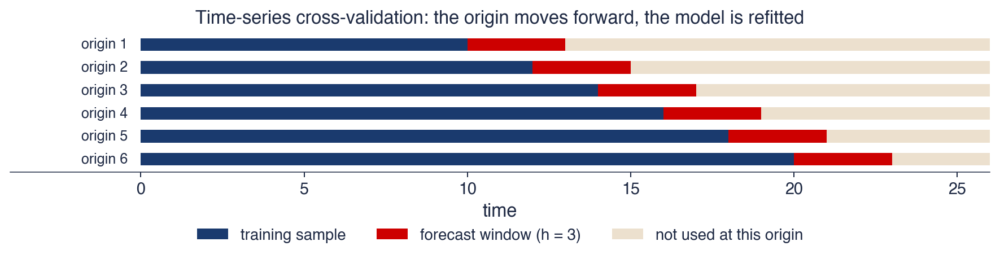
Rolling forecast origin (Tashman (2000); FPP3, Section 5.10): fit on the data up to the origin, forecast \(h\) steps, move the origin, refit
Expanding window (shown) or sliding window of fixed length; never use future data to fit
For daily load, the evaluation has 26 origins, 14 days apart, from 30 June 2025 to 15 June 2026, and the horizon is \(h = 14\) days. Together the forecast windows cover one year, with all seasons and all holidays, including Easter 2026.
Seven methods are compared, all re-estimated at each origin. The seasonal naive method repeats the last week (period 7). ETS is the Holt–Winters method with a damped trend and period 7. SARIMA is the model SARIMA\((2,0,1)(0,1,1)_7\). DHR is the dynamic harmonic regression (4.10), and TBATS and Prophet are the models of the previous section. The seventh method, the combination, is the simple mean of the forecasts of the five models, that is, all methods except the seasonal naive one.
The orders of the SARIMA model and of the DHR errors are chosen once, by AIC, on the data before the first origin. The test period thus does not influence the choice of model. Time order matters: ordinary cross-validation, which splits the observations into random groups, is valid for time series only for purely autoregressive models with white-noise errors (Bergmeir, Hyndman and Koo, 2018).
In brief
Daily load: 26 origins every 14 days, from 30 June 2025 to 15 June 2026; horizon \(h = 14\) days
one year of out-of-sample forecasts, every season and every holiday, Easter 2026 included
Combination: the simple average of the five model forecasts (all except the seasonal naive)
The orders of SARIMA and of the DHR errors are chosen once, by AIC, on the data before the first origin: no peeking at the test period
Cross-validation that ignores time order (random folds) is valid only for pure autoregressions with white-noise errors (Bergmeir, Hyndman and Koo (2018))
The test of Diebold and Mariano (1995) asks whether the difference in accuracy between two forecasts is larger than chance would produce. Let \(e_{1t}\) and \(e_{2t}\) be the errors of the two forecasts and \(L\) a loss function, for example \(L(e) = e^2\) or \(L(e) = |e|\). The loss differential is \(d_t = L(e_{1t}) - L(e_{2t})\), and the null hypothesis of equal accuracy is \(\mathbb{E}[d_t] = 0\). The test statistic is
\[\mathrm{DM} = \frac{\bar d}{\sqrt{\hat V/n}},\]
(4.13)
where the long-run variance of \(d_t\) is estimated by
\[\hat V = \hat\gamma_d(0) + 2\sum_{k=1}^{h-1}\hat\gamma_d(k),\]
Here \(\bar d\) is the mean of the \(n\) differentials and \(\hat\gamma_d(k)\) their sample autocovariance at lag \(k\). A negative DM favours forecast 1. The sum of autocovariances appears because \(h\)-step forecast errors overlap: two consecutive \(h\)-step forecasts share \(h - 1\) future shocks, so \(d_t\) is autocorrelated up to lag \(h - 1\).
Asymptotically, the DM statistic follows the standard Normal distribution. For small samples, Harvey, Leybourne and Newbold (1997) propose the correction
compared with the \(t\) distribution with \(n - 1\) degrees of freedom. The correction reduces the absolute value of the statistic and uses larger critical values, so it rejects the null less often when \(n\) is small.
In this chapter's scheme, each origin contributes a single value, \(d_j\), the mean loss differential over its 14-day window. The windows do not overlap, so \(h = 1\) in the formula and \(\hat V = \hat\gamma_d(0)\). The test compares forecasts, not models: the noise of re-estimation at each origin is part of what is tested.
The example has five windows. The mean squared-error differentials, method 1 minus method 2, are −0.30, 0.10, −0.50, −0.20 and −0.40. Their mean is \(\bar d = -0.26\): method 1 has smaller losses in four windows out of five and a mean loss lower by 0.26.
The variance of the differentials, with non-overlapping windows, is \(\hat\gamma_d(0) = \frac15\sum_j(d_j - \bar d)^2 = 0.042\). The statistic is \(\mathrm{DM} = -0.26/\sqrt{0.042/5} = -2.82\). With \(n = 5\) and \(h = 1\), the correction factor of (4.14) is \(\sqrt{4/5}\), so \(\mathrm{HLN} = -2.53\).
The two-sided 5% critical value of the \(t\) distribution with 4 degrees of freedom is \(t_{0.975}(4) = 2.78\). Since \(|-2.53| < 2.78\), with p-value 0.065, equal accuracy is not rejected at 5%: method 1 is better on average, but with five windows the difference is not separated from noise. The critical value of the Normal distribution, 1.96, would have led to rejection; with few windows, the correction changes the conclusion.
In brief
Five windows; window-average differences in squared error, method 1 minus method 2: \(-0.30, 0.10, -0.50, -0.20, -0.40\)
\(\bar d = \ensuremath{-}0.26\): method 1 has the smaller losses in four windows out of five
The chart shows a single evaluation window: the forecasts made on 6 April 2026 for the next 14 days, compared with observed load. Orthodox Easter Sunday was on 12 April 2026, so the window contains all four days of Easter. The black line with dots is observed daily load, in GW, from March to 20 April; the dotted vertical line marks the origin, and the coloured lines are the forecasts of the methods.
The window is the hardest of the year: Good Friday and Easter Monday are days off that fall on working days, and a method that knows only the weekly pattern treats them as ordinary days.
In brief
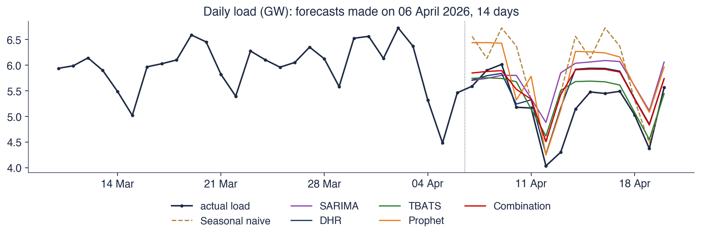
Origin 6 April 2026, 14 days ahead; Orthodox Easter Sunday was 12 April 2026
The mean absolute error (MAE) in this window, in MW, is 299 for ETS, 309 for TBATS, 344 for DHR, 394 for the combination, 584 for SARIMA, 616 for Prophet and 686 for the seasonal naive method. The seasonal naive method copies the normal week before the origin into Easter week and therefore has the largest error.
All models predict the Sunday drop. DHR and Prophet, which have holiday regressors, also go down on Good Friday and Easter Monday, which models with only a weekly pattern treat as working days. After Easter, observed load stays below all forecasts until the end of the week. The ETS and TBATS models, whose level adapts to the last observed days, have the smallest errors here, even though they do not know the holidays.
A single window is an isolated case, and its ranking may be due to chance. Conclusions about the methods are drawn from the average over all 26 windows, on the following slides.
In brief
MAE in this window (MW): ETS 299, TBATS 309, DHR 344, Combination 394, SARIMA 584, Prophet 616, seasonal naive 686
the seasonal naive method copies the previous normal week into Easter week
Every model sees the Sunday dip; DHR and Prophet also lower Good Friday and Easter Monday, which the weekly models treat as working days
After Easter the load stays below every forecast for the rest of the week; ETS and TBATS, whose level follows the latest days, lose least here
One window is anecdote; the next slides average over all 26 windows
The chart summarises the 26 origins × 14 horizons for each method. The left panel shows the overall MAE, in MW, over all origins and horizons; shorter bars mean more accurate forecasts. The right panel shows the MAE for each horizon, from 1 to 14 days.
In the right panel, the errors of all methods grow with the horizon, and the differences between methods grow too. DHR has the smallest error at most horizons, and at horizons of 12–14 days its distance from the other methods is the largest. The curves do not rise monotonically: each horizon has only 26 errors, one per origin, and a few difficult days can move the mean of a horizon.
In brief
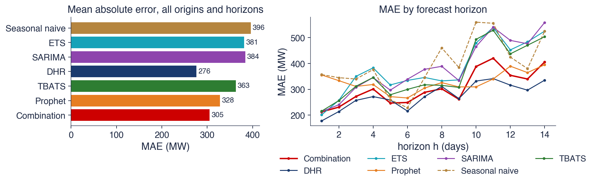
26 origins \(\times\) 14 horizons for each method; left: overall MAE; right: MAE by horizon
The table gives for each method the MAE, the root mean squared error (RMSE) and the mean absolute scaled error (MASE), proposed by Hyndman and Koehler (2006). MASE divides the MAE by 309 MW, the in-sample mean absolute error of the weekly seasonal naive method:
with \(m = 7\). A value below 1 means the method is more accurate than the in-sample seasonal naive method. The last two columns give the HLN statistic and its p-value, computed on the mean squared error of each window, for the method in the row minus the method in the column; a negative value favours the method in the row.
DHR has the smallest error: MAE 276 MW, RMSE 350 MW and MASE 0.89. Together with the combination, which has MASE 0.99, it is the only method with MASE below 1. Prophet is the second individual model, with MAE 328 MW. DHR and Prophet are the only models that include holidays. All methods are significantly less accurate than DHR at 5%, except the combination, for which the HLN statistic is 1.89, with p-value 0.070.
ETS, SARIMA and TBATS are not separated from the seasonal naive method: the HLN statistics are −0.80, −1.23 and −1.50, with p-values 0.431, 0.231 and 0.145. Three models with estimated parameters cannot be distinguished, over one year of forecasts, from a method that repeats last week. For daily load, calendar information matters more than the model class.
In brief
Method
MAE
RMSE
MASE
DM against s. naive
DM against DHR
Seasonal naive
396
529
1.28
–
\(4.42\) (\(<\) 0.001)
ETS
381
492
1.23
\(\ensuremath{-}0.80\) (0.431)
\(3.08\) (0.005)
SARIMA
384
477
1.24
\(\ensuremath{-}1.23\) (0.231)
\(3.29\) (0.003)
DHR
276
350
0.89
\(\ensuremath{-}4.42\) (\(<\) 0.001)
–
TBATS
363
468
1.18
\(\ensuremath{-}1.50\) (0.145)
\(3.02\) (0.006)
Prophet
328
412
1.06
\(\ensuremath{-}2.99\) (0.006)
\(2.76\) (0.011)
Combination
305
380
0.99
\(\ensuremath{-}3.82\) (\(<\) 0.001)
\(1.89\) (0.070)
MAE and RMSE in MW; MASE (Hyndman and Koehler (2006)) = MAE / 309 MW, the in-sample MAE of the weekly seasonal naive method; DM: HLN statistic (p-value) on window-average squared errors, row method minus column method
DHR wins; with the combination, it is the only method with MASE below 1; Prophet is the second single model: the two that know the holidays
ETS, SARIMA and TBATS are not significantly better than the seasonal naive method
The second evaluation uses quarterly GDP \(100\ln Y\), with errors expressed in per cent. It has 51 quarterly origins, from Q4 2012 to Q2 2025, with an expanding window, and compares the airline model, ETS, the seasonal naive method and the SARIMA–ETS combination. The table gives the MAE at horizons of 1 and 4 quarters, for all origins and for the 43 origins left after excluding 2019–2020.
Over all origins, at \(h = 1\), the MAE is 1.69% for SARIMA, 1.76% for ETS, 3.81% for the seasonal naive method and 1.70% for the combination. The HLN test gives for SARIMA against ETS −1.46 (p-value 0.150) at \(h = 1\) and 0.50 (p-value 0.620) at \(h = 4\). For SARIMA against the seasonal naive method, the statistic is −4.00 (p-value below 0.001) at \(h = 1\) and −0.54 (p-value 0.591) at \(h = 4\).
One quarter ahead, SARIMA and ETS are clearly better than the seasonal naive method but cannot be told apart. One year ahead, the errors of the pandemic period dominate the mean, and no difference is significant. Without 2019–2020, SARIMA has the smallest MAE at \(h = 4\), 1.89%, against 2.44% for ETS and 2.02% for the combination.
In brief
Method
MAE, \(h = 1\)
MAE, \(h = 4\)
without 2019–2020, \(h = 1\)
without 2019–2020, \(h = 4\)
SARIMA (airline)
1.69
2.70
1.32
1.89
ETS
1.76
2.84
1.41
2.44
Seasonal naive
3.81
3.74
3.80
3.49
Combination (SARIMA, ETS)
1.70
2.65
1.34
2.02
\(100\ln Y\), errors in %; 51 quarterly origins, 2012Q4–2025Q2, expanding window; 43 origins without 2019–2020
Forecasts are evaluated out of sample, with rolling origins, and model orders are chosen before the test period. MASE compares each method with the seasonal naive method and allows comparisons across series. The DM test, with the HLN correction, shows whether an accuracy gain is more than a chance effect. For daily load, the models that include the calendar, DHR and Prophet, are the most accurate; for GDP, SARIMA and ETS are close.
In brief
Evaluate out of sample with rolling origins; choose model orders before the test period
MASE compares with the seasonal naive method and across series
The DM test (with the HLN correction) says whether a gain is more than chance
Daily load: the models that know the calendar (DHR, Prophet) win; for GDP, SARIMA and ETS are close
Section summary
Over one year of out-of-sample forecasts for daily load, DHR has an MAE of 276 MW, 30% below the seasonal naive method, and the difference is significant. ETS, SARIMA and TBATS are not separated from the seasonal naive method, even though they are more complex models. For GDP, one quarter ahead, SARIMA and ETS clearly beat the seasonal naive method but cannot be told apart. A single window, such as that of Easter 2026, can give a ranking opposite to the average, and the average over many origins, together with a test, is the basis for the decision.
Forecast combination
When it is not known in advance which method will be the most accurate, an alternative to choosing a single method is to combine several forecasts. The section gives the theoretical result of Bates and Granger (1969) for the optimal weight, explains why equal weights are hard to beat in practice and applies the idea to the DHR and Prophet forecasts of daily load.
Bates and Granger (1969) combine two unbiased forecasts \(f_1\) and \(f_2\) into a weighted average \(f_c = wf_1 + (1 - w)f_2\), where \(w\) is the weight of forecast 1. If \(\sigma_1\) and \(\sigma_2\) are the standard deviations of the two errors and \(\rho\) their correlation, the mean squared error of the combination is
The denominator is the variance of the difference of the two errors. The gain of combining over the better forecast is large when \(\rho\) is small, that is, when the two forecasts err at different times.
The numerical example has \(\sigma_1 = 1\),\(\sigma_2 = 1.2\) and \(\rho = 0.75\). Equal weights give \(\mathrm{MSE}(0.5) = 0.25 + 0.36 + 0.45 = 1.060\), more than the mean squared error of the better forecast, \(\sigma_1^2 = 1\). The optimal weight is \(w^* = 0.54/0.64 = 0.84\), with \(\mathrm{MSE}(w^*) = 0.984\): a gain of only 1.6% over forecast 1. With strongly correlated errors, even the optimal weight brings little.
The forecast combination puzzle is the empirical finding, documented by Stock and Watson (2004) and explained by Smith and Wallis (2009), that estimated weights are rarely better than equal weights. The explanation is that \(w^*\) depends on \(\sigma_1\),\(\sigma_2\) and \(\rho\), which must be estimated from past errors, and the estimation error of the weights eats up the theoretical gain. Equal weights estimate nothing and do not have this error.
In brief
Bates and Granger (1969): a weighted average of two unbiased forecasts, \(f_c = wf_1 + (1 - w)f_2\)
\(w\): the weight of forecast 1; \(\sigma_1\), \(\sigma_2\): the standard deviations of the two errors; \(\rho\): their correlation
best weight \(w^* = \dfrac{\sigma_2^2 - \rho\sigma_1\sigma_2}{\sigma_1^2 + \sigma_2^2 - 2\rho\sigma_1\sigma_2}\); the gain is large when \(\rho\) is small
The chart shows the errors of the DHR–Prophet combination in the cross-validation for daily load, as a function of the weight \(w\) of the DHR forecast; the rest, \(1 - w\), goes to the Prophet forecast. The blue line is the MAE and the red line the RMSE, both in MW. The left end, \(w = 0\), is Prophet alone, the right end, \(w = 1\), DHR alone, and the dashed vertical line marks equal weights.
Both curves are convex and have their minimum close to the DHR end. The curves are computed on the same errors on which the evaluation is made, so their minimum shows the best weight in hindsight, not a weight that could have been chosen in advance.
In brief
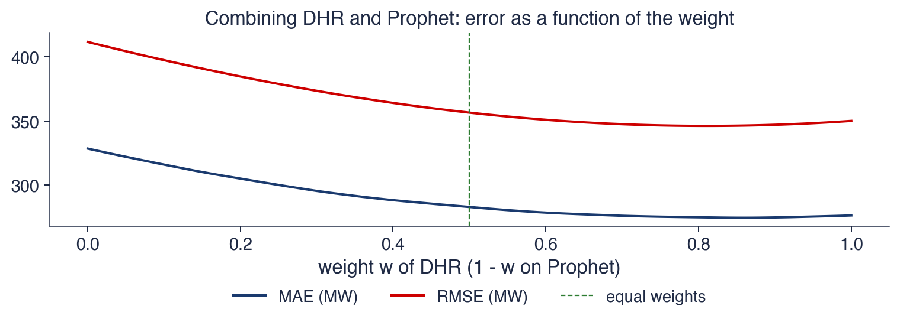
Cross-validation errors of the daily load; \(w\) is the weight of DHR
The MAE is 328 MW for Prophet alone (\(w = 0\)), 276 MW for DHR alone (\(w = 1\)) and 283 MW for equal weights. The best weight in hindsight is \(w = 0.86\), with MAE 274 MW: a gain of 2 MW over DHR, obtained with a weight chosen after seeing the test data. The gain from combining is small because the errors of the two methods are strongly correlated, with \(\rho = 0.75\): both miss the same cold spells, which neither can anticipate without temperature data.
The mean of the five models, with MAE 305 MW, is the second method in the evaluation, after DHR, and is more accurate than four of its five components. It is cheap insurance when the winner is not known in advance: an analyst who had picked one of the five models at random would, with probability 4/5, have had a larger error than the combination.
The result matches the experience of forecasting competitions. Makridakis, Spiliotis and Assimakopoulos (2020) describe the M4 competition, in which most of the top methods were combinations. A review of five decades of research on forecast combination is Wang et al. (2023).
In brief
MAE: Prophet alone (w = 0) 328 MW, DHR alone (w = 1) 276 MW, equal weights 283 MW
best in hindsight: \(w = 0.86\), MAE 274 MW, a small gain chosen after seeing the test data
The errors of the two methods are strongly correlated (\(\rho = 0.75\)): both miss the same cold spells
The five-model average (MAE 305) is second only to DHR and better than four of its five members: cheap insurance when the winner is not known in advance
Combining reduces the error when the forecasts err at different times, and the gain falls when the errors are correlated. For DHR and Prophet, with \(\rho = 0.75\), equal weights give an MAE of 283 MW, against 276 MW for DHR alone. The mean of the five models is the second most accurate method, with MAE 305 MW. Estimated weights rarely bring more than equal weights, because they too must be estimated.
Possible contribution of AI
An AI assistant can speed up part of the work in this chapter: writing the evaluation code, compiling holiday calendars and checking derivations. The section describes these uses and the checks the analyst must make before using the results.
The first use is code. An assistant can write a first version of the rolling-origin loop that re-estimates SARIMA, DHR, TBATS and Prophet at each origin and keeps the errors for each horizon. Code of this kind has many repetitive details, and a generated first version saves time, provided each step is checked.
The second use is calendars: lists of public and moving holidays for other countries, needed to apply DHR or Prophet outside Romania. These lists must be checked against official sources, because a wrong date introduces a systematic error exactly on the days with the largest deviations. The third use is explanations: a second derivation of the ACF of the airline model or of the eventual forecast function, compared with the one in the lecture.
The prompt on the slide asks for Python code that forecasts daily load 14 days ahead with a regression on annual Fourier terms, day-of-week dummies and Romanian public holidays, with ARMA errors, evaluated against SARIMA by rolling origins and a Diebold–Mariano test. The prompt specifies every element of the model and of the evaluation, so the result can be checked point by point.
In brief
Code: a first draft of a rolling-origin loop that refits SARIMA, DHR, TBATS and Prophet and stores the errors by horizon
Calendars: lists of holidays and moving feasts for other countries, to be checked against official sources
Explanation: a second derivation of the ACF of the airline model, or of the eventual forecast function
Example prompt
Write Python code that forecasts daily electricity load 14 days ahead with a regression on annual Fourier terms, weekday dummies and Romanian public holidays (Orthodox Easter from dateutil) with ARMA errors, and evaluates it against SARIMA by rolling origins and a Diebold-Mariano test.
The first checks concern the data. The Easter date must be the Orthodox one, not the Western one (`EASTER_ORTHODOX` in `dateutil`); in 2024 the two dates differed by five weeks. All variables, model orders and holiday lists must be available at each origin, with no look-ahead information. SARIMA uses the NSA series, and growth rates are computed on the appropriate version of the series.
The next checks concern conventions and tests. Programs use different sign conventions for the coefficients \(\theta\) and \(\Theta\), and a sign error changes the interpretation of the model. The degrees of freedom of the Ljung–Box test must be reduced by the number of ARMA parameters. The DM test must use the losses from the same windows for both methods and the HLN correction when the number of windows is small.
The last check concerns references: every work cited by an assistant must exist, and its DOI must be checked. AI assistants can generate plausible references that do not exist.
In brief
The Easter date: Orthodox, not Western (EASTER_ORTHODOX); in 2024 the two differ by five weeks
No look-ahead: features, model orders and holiday lists must be available at each origin
The sign conventions of \(\theta\) and \(\Theta\) in the software, and the degrees of freedom of Ljung–Box
Adjusted or unadjusted data: SARIMA on NSA; growth rates on the right version
That the DM test uses losses from the same windows for both methods, and the HLN correction for small \(n\)
Every cited reference: it must exist; check the DOI
Section summary
The AI assistant can write the evaluation code, compile calendars and offer a second derivation, but the checks remain the analyst's: the Orthodox Easter date, the absence of look-ahead information, sign conventions, degrees of freedom, the construction of the DM test and the existence of the references.
Summary
The last section collects the ideas, formulas and self-assessment questions of the chapter.
Seasonality repeats with a known period and can be deterministic, modelled with dummy variables or Fourier terms, or stochastic, removed with \(\Delta_s\); the HEGY, OCSB and Canova–Hansen tests decide between the two. The SARIMA model multiplies regular and seasonal polynomials, and the airline model, with two parameters, fits many series, from airline passengers to Romanian GDP.
In official data, the SCA series is used for short-term growth, and the NSA series, with calendar regressors, for SARIMA forecasting. Calendar effects, that is, working days, Orthodox Easter and holidays, are known in advance and often matter more than the model class. For multiple seasonality, the tools are MSTL, DHR, TBATS and Prophet; for Romanian daily load, DHR gives the best out-of-sample forecasts.
Forecasts are judged with rolling origins, MASE and the DM test, and when the winner is uncertain, they are combined.
In brief
Seasonality repeats with a known period; it can be deterministic (dummies, Fourier) or stochastic (\(\Delta_s\))
SARIMA multiplies regular and seasonal polynomials; the airline model fits many series with two parameters
Official data: SCA for short-run growth, NSA with calendar regressors for SARIMA forecasting
Calendar effects (working days, Orthodox Easter, holidays) are known in advance and often matter more than the model class
Multiple seasonality: MSTL, DHR, TBATS, Prophet; on Romanian daily load, DHR wins out of sample
Judge forecasts by rolling origins, MASE and the DM test; combine them when the winner is uncertain
The table collects the formulas of the chapter. The seasonal difference and the double difference are (4.1) and \(\Delta\Delta_s = 1 - L - L^s + L^{s+1}\). The SARIMA model is (4.4), and the autocorrelations of the airline model are (4.6), with the satellites \(\rho_{s \pm 1} = \rho_1\rho_s\). The Fourier terms are (4.8), and the Prophet model (4.12).
For evaluation, MASE is (4.15): the mean absolute error of the forecast divided by the in-sample mean absolute error of the seasonal naive method. The Diebold–Mariano statistic is (4.13), and the optimal weight for combining two forecasts is (4.17).
The first question asks for the number of parameters of the SARIMA\((1,1,1)(0,1,1)_{12}\) model and the lags at which the shocks appear. The model has four parameters, \(\phi\),\(\theta\),\(\Theta\) and \(\sigma^2\), and the shock \(\varepsilon\) appears at lags 0, 1, 12 and 13, the last with coefficient \(\theta\Theta\), as in (4.5).
The second question: unadjusted GDP falls by 40% from the fourth quarter to the first; is this a recession? No: the fall is the usual seasonal pattern. The state of the economy is read from the SCA series or from growth over the same quarter of the previous year.
The third question: a DM test with 26 windows gives an HLN statistic of −1.93; is the first forecast significantly better at 5%? No, because \(|-1.93| < t_{0.975}(25) = 2.06\): the first forecast is better on average, but this test does not separate the difference from noise.
The project idea extends the chapter's analysis to hourly load: a dynamic harmonic regression with daily, weekly and annual Fourier terms, holidays and temperature, compared with TBATS, Prophet and a combination, by rolling origins and DM tests. Chapter 5 moves from the conditional mean to the conditional variance, with ARCH and GARCH models.
In brief
Question: how many parameters does SARIMA\((1,1,1)(0,1,1)_{12}\) have, and at which lags does \(\varepsilon\) appear?
Answer: \(\phi, \theta, \Theta, \sigma^2\), four; \(\varepsilon\) at lags 0, 1, 12, 13 (the last with coefficient \(\theta\Theta\))
Question: unadjusted GDP falls by 40% from Q4 to Q1. Is this a recession?
Answer: no; it is the seasonal pattern; look at the SCA series or at year-on-year growth
Question: a DM test with 26 windows gives HLN \(= -1.93\). Is the first forecast significantly better at 5%?
Answer: no: \(|-1.93| < t_{0.975}(25) = 2.06\); it is better on average, but not significantly
Project idea: forecast Romanian hourly electricity load with a DHR (daily, weekly and annual Fourier terms, holidays, temperature) against TBATS, Prophet and a combination, by rolling origins and DM tests
Next: Chapter 5, conditional volatility: ARCH and GARCH models
Section summary
The chapter treated seasonality in three ways: removed by differencing in SARIMA models, modelled with Fourier and calendar regressors in DHR, TBATS and Prophet, and taken out of the data in official adjusted series. Out-of-sample evaluation showed that, for electricity load, calendar information matters more than the model class, and for GDP simple models are hard to beat.
Bandara, K., Hyndman, R. J., & Bergmeir, C. (2025). MSTL: A seasonal-trend decomposition algorithm for time series with multiple seasonal patterns. International Journal of Operational Research, 52(1), 79–98. doi:10.1504/ijor.2025.143957
Bates, J. M., & Granger, C. W. J. (1969). The combination of forecasts. Journal of the Operational Research Society, 20(4), 451–468. doi:10.1057/jors.1969.103
Bergmeir, C., Hyndman, R. J., & Koo, B. (2018). A note on the validity of cross-validation for evaluating autoregressive time series prediction. Computational Statistics & Data Analysis, 120, 70–83. doi:10.1016/j.csda.2017.11.003
Box, G. E. P., & Cox, D. R. (1964). An analysis of transformations. Journal of the Royal Statistical Society, Series B, 26(2), 211–243. doi:10.1111/j.2517-6161.1964.tb00553.x
Box, G. E. P., Jenkins, G. M., & Reinsel, G. C. (2008). Time Series Analysis: Forecasting and Control (4th ed.). Wiley. doi:10.1002/9781118619193
Brockwell, P. J., & Davis, R. A. (2016). Introduction to Time Series and Forecasting (3rd ed.). Springer. doi:10.1007/978-3-319-29854-2
Canova, F., & Hansen, B. E. (1995). Are seasonal patterns constant over time? A test for seasonal stability. Journal of Business & Economic Statistics, 13(3), 237–252. doi:10.1080/07350015.1995.10524598
Dagum, E. B., & Bianconcini, S. (2016). Seasonal Adjustment Methods and Real Time Trend-Cycle Estimation. Springer. doi:10.1007/978-3-319-31822-6
De Livera, A. M., Hyndman, R. J., & Snyder, R. D. (2011). Forecasting time series with complex seasonal patterns using exponential smoothing. Journal of the American Statistical Association, 106(496), 1513–1527. doi:10.1198/jasa.2011.tm09771
Diebold, F. X., & Mariano, R. S. (1995). Comparing predictive accuracy. Journal of Business & Economic Statistics, 13(3), 253–263. doi:10.1080/07350015.1995.10524599
Eurostat (2024). ESS Guidelines on Seasonal Adjustment, 2024 edition. Publications Office of the European Union. ec.europa.eu/eurostat
Findley, D. F., Monsell, B. C., Bell, W. R., Otto, M. C., & Chen, B.-C. (1998). New capabilities and methods of the X-12-ARIMA seasonal-adjustment program. Journal of Business & Economic Statistics, 16(2), 127–152. doi:10.1080/07350015.1998.10524743
Harvey, D., Leybourne, S., & Newbold, P. (1997). Testing the equality of prediction mean squared errors. International Journal of Forecasting, 13(2), 281–291. doi:10.1016/S0169-2070(96)00719-4
Hong, T., Pinson, P., Fan, S., Zareipour, H., Troccoli, A., & Hyndman, R. J. (2016). Probabilistic energy forecasting: Global Energy Forecasting Competition 2014 and beyond. International Journal of Forecasting, 32(3), 896–913. doi:10.1016/j.ijforecast.2016.02.001
Huang, C., & Petukhina, A. (2022). Applied Time Series Analysis and Forecasting with Python. Springer. doi:10.1007/978-3-031-13584-2
Hylleberg, S., Engle, R. F., Granger, C. W. J., & Yoo, B. S. (1990). Seasonal integration and cointegration. Journal of Econometrics, 44(1–2), 215–238. doi:10.1016/0304-4076(90)90080-D
Hyndman, R. J., & Athanasopoulos, G. (2021). Forecasting: Principles and Practice (3rd ed.). OTexts. otexts.com/fpp3
Hyndman, R. J., & Khandakar, Y. (2008). Automatic time series forecasting: The forecast package for R. Journal of Statistical Software, 27(3), 1–22. doi:10.18637/jss.v027.i03
Hyndman, R. J., & Koehler, A. B. (2006). Another look at measures of forecast accuracy. International Journal of Forecasting, 22(4), 679–688. doi:10.1016/j.ijforecast.2006.03.001
Ladiray, D., & Quenneville, B. (2001). Seasonal Adjustment with the X-11 Method. Lecture Notes in Statistics 158. Springer. doi:10.1007/978-1-4613-0175-2
Ljung, G. M., & Box, G. E. P. (1978). On a measure of lack of fit in time series models. Biometrika, 65(2), 297–303. doi:10.1093/biomet/65.2.297
Makridakis, S., Spiliotis, E., & Assimakopoulos, V. (2020). The M4 Competition: 100,000 time series and 61 forecasting methods. International Journal of Forecasting, 36(1), 54–74. doi:10.1016/j.ijforecast.2019.04.014
Osborn, D. R., Chui, A. P. L., Smith, J. P., & Birchenhall, C. R. (1988). Seasonality and the order of integration for consumption. Oxford Bulletin of Economics and Statistics, 50(4), 361–377. doi:10.1111/j.1468-0084.1988.mp50004002.x
Petropoulos, F., et al. (2022). Forecasting: theory and practice. International Journal of Forecasting, 38(3), 705–871. doi:10.1016/j.ijforecast.2021.11.001
Smith, J., & Wallis, K. F. (2009). A simple explanation of the forecast combination puzzle. Oxford Bulletin of Economics and Statistics, 71(3), 331–355. doi:10.1111/j.1468-0084.2008.00541.x
Stock, J. H., & Watson, M. W. (2004). Combination forecasts of output growth in a seven-country data set. Journal of Forecasting, 23(6), 405–430. doi:10.1002/for.928
Tashman, L. J. (2000). Out-of-sample tests of forecasting accuracy: an analysis and review. International Journal of Forecasting, 16(4), 437–450. doi:10.1016/S0169-2070(00)00065-0
Taylor, S. J., & Letham, B. (2018). Forecasting at scale. The American Statistician, 72(1), 37–45. doi:10.1080/00031305.2017.1380080
Wang, X., Hyndman, R. J., Li, F., & Kang, Y. (2023). Forecast combinations: An over 50-year review. International Journal of Forecasting, 39(4), 1518–1547. doi:10.1016/j.ijforecast.2022.11.005
References
Bandara, K., Hyndman, R. J., & Bergmeir, C. (2025). MSTL: A seasonal-trend decomposition algorithm for time series with multiple seasonal patterns. International Journal of Operational Research, 52(1), 79–98. https://doi.org/10.1504/ijor.2025.143957
Bates, J. M., & Granger, C. W. J. (1969). The combination of forecasts. Journal of the Operational Research Society, 20(4), 451–468. https://doi.org/10.1057/jors.1969.103
Bergmeir, C., Hyndman, R. J., & Koo, B. (2018). A note on the validity of cross-validation for evaluating autoregressive time series prediction. Computational Statistics & Data Analysis, 120, 70–83. https://doi.org/10.1016/j.csda.2017.11.003
Box, G. E. P., Jenkins, G. M., & Reinsel, G. C. (2008). Time Series Analysis: Forecasting and Control (4th ed.). Wiley. https://doi.org/10.1002/9781118619193
Canova, F., & Hansen, B. E. (1995). Are seasonal patterns constant over time? A test for seasonal stability. Journal of Business & Economic Statistics, 13(3), 237–252. https://doi.org/10.1080/07350015.1995.10524598
De Livera, A. M., Hyndman, R. J., & Snyder, R. D. (2011). Forecasting time series with complex seasonal patterns using exponential smoothing. Journal of the American Statistical Association, 106(496), 1513–1527. https://doi.org/10.1198/jasa.2011.tm09771
Findley, D. F., Monsell, B. C., Bell, W. R., Otto, M. C., & Chen, B.-C. (1998). New capabilities and methods of the X-12-ARIMA seasonal-adjustment program. Journal of Business & Economic Statistics, 16(2), 127–152. https://doi.org/10.1080/07350015.1998.10524743
Harvey, D., Leybourne, S., & Newbold, P. (1997). Testing the equality of prediction mean squared errors. International Journal of Forecasting, 13(2), 281–291. https://doi.org/10.1016/S0169-2070(96)00719-4
Hong, T., Pinson, P., Fan, S., Zareipour, H., Troccoli, A., & Hyndman, R. J. (2016). Probabilistic energy forecasting: Global Energy Forecasting Competition 2014 and beyond. International Journal of Forecasting, 32(3), 896–913. https://doi.org/10.1016/j.ijforecast.2016.02.001
Hylleberg, S., Engle, R. F., Granger, C. W. J., & Yoo, B. S. (1990). Seasonal integration and cointegration. Journal of Econometrics, 44(1–2), 215–238. https://doi.org/10.1016/0304-4076(90)90080-D
Hyndman, R. J., & Athanasopoulos, G. (2021). Forecasting: Principles and Practice (3rd ed.). OTexts. https://otexts.com/fpp3/
Hyndman, R. J., & Khandakar, Y. (2008). Automatic time series forecasting: The forecast package for R. Journal of Statistical Software, 27(3), 1–22. https://doi.org/10.18637/jss.v027.i03
Ladiray, D., & Quenneville, B. (2001). Seasonal Adjustment with the X-11 Method. Lecture Notes in Statistics 158. Springer. https://doi.org/10.1007/978-1-4613-0175-2
Ljung, G. M., & Box, G. E. P. (1978). On a measure of lack of fit in time series models. Biometrika, 65(2), 297–303. https://doi.org/10.1093/biomet/65.2.297
Makridakis, S., Spiliotis, E., & Assimakopoulos, V. (2020). The M4 Competition: 100,000 time series and 61 forecasting methods. International Journal of Forecasting, 36(1), 54–74. https://doi.org/10.1016/j.ijforecast.2019.04.014
Osborn, D. R., Chui, A. P. L., Smith, J. P., & Birchenhall, C. R. (1988). Seasonality and the order of integration for consumption. Oxford Bulletin of Economics and Statistics, 50(4), 361–377. https://doi.org/10.1111/j.1468-0084.1988.mp50004002.x
Smith, J., & Wallis, K. F. (2009). A simple explanation of the forecast combination puzzle. Oxford Bulletin of Economics and Statistics, 71(3), 331–355. https://doi.org/10.1111/j.1468-0084.2008.00541.x
Stock, J. H., & Watson, M. W. (2004). Combination forecasts of output growth in a seven-country data set. Journal of Forecasting, 23(6), 405–430. https://doi.org/10.1002/for.928
Tashman, L. J. (2000). Out-of-sample tests of forecasting accuracy: an analysis and review. International Journal of Forecasting, 16(4), 437–450. https://doi.org/10.1016/S0169-2070(00)00065-0
Wang, X., Hyndman, R. J., Li, F., & Kang, Y. (2023). Forecast combinations: An over 50-year review. International Journal of Forecasting, 39(4), 1518–1547. https://doi.org/10.1016/j.ijforecast.2022.11.005